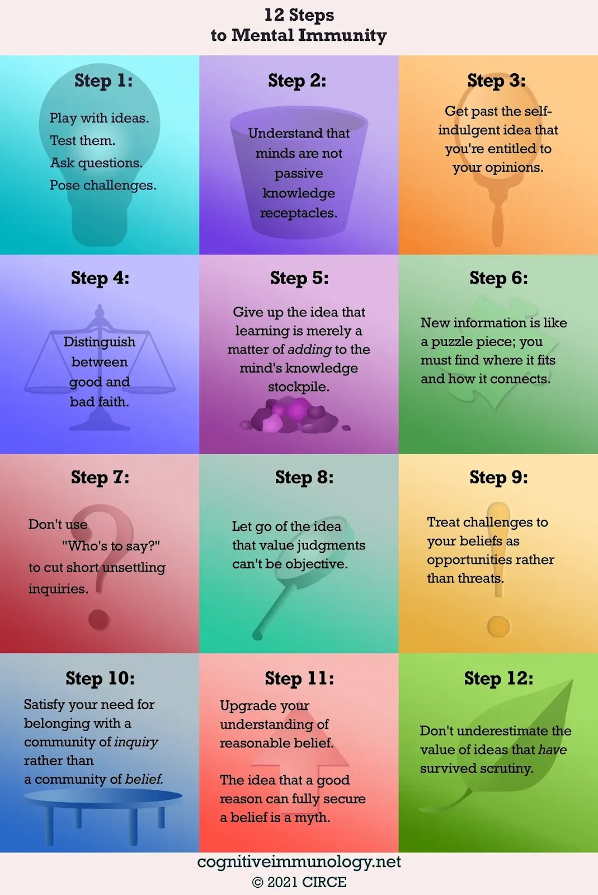
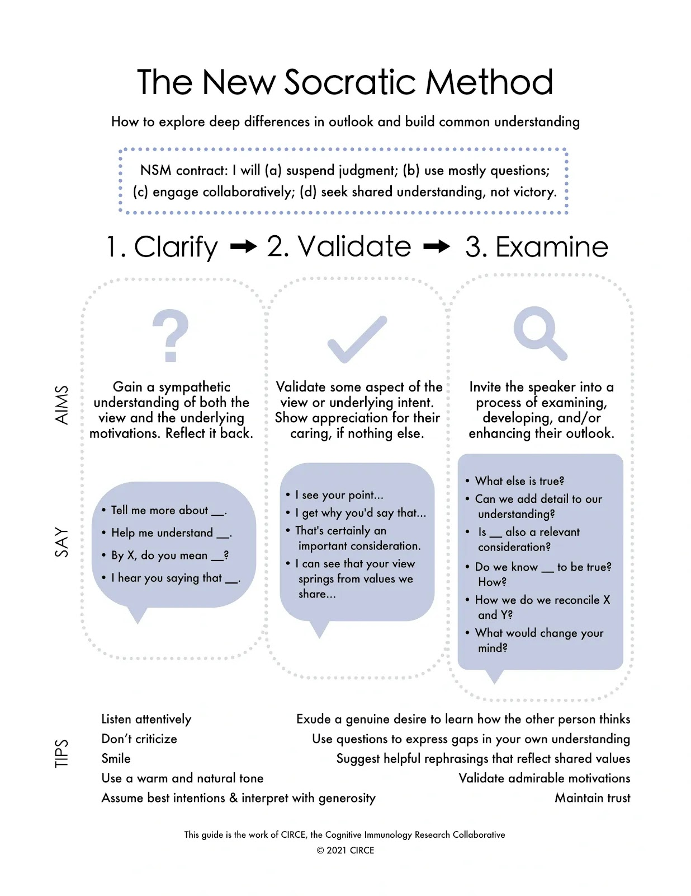
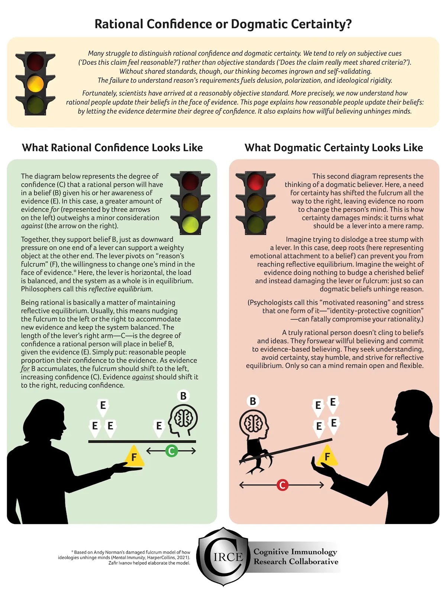

<title>Cognitive Immunology and Mental Immunity</title>
<meta name="viewport" content="width=device-width, initial-scale=1" />
<style>
      /* Scoped styles for Blogger dark themes. No white table backgrounds. */
      .ep-post {
        color: inherit;
        background: transparent;
        font-family:
          system-ui,
          -apple-system,
          BlinkMacSystemFont,
          "Segoe UI",
          Roboto,
          Helvetica,
          Arial,
          sans-serif;
        line-height: 1.65;
        font-size: 1rem;
        max-width: 980px;
        margin: 0 auto;
      }

      .ep-post * {
        box-sizing: border-box;
      }

      
      .ep-post {
        box-sizing: border-box;
        width: min(100%, 980px);
        padding-left: 1rem;
        padding-right: 1rem;
        overflow-wrap: break-word;
      }

      .ep-post img,
      .ep-post video,
      .ep-post canvas,
      .ep-post svg {
        max-width: 100%;
        height: auto;
      }

      .ep-post figure {
        margin: 1.15em 0;
        max-width: 100%;
      }

      .ep-post .mermaid {
        max-width: 100%;
        overflow-x: auto;
      }

      .ep-post .mermaid svg {
        max-width: 100%;
        height: auto;
      }

.ep-post h1,
      .ep-post h2,
      .ep-post h3,
      .ep-post h4 {
        line-height: 1.25;
        margin: 1.8em 0 0.65em;
        color: inherit;
      }

      .ep-post h1 {
        font-size: 2rem;
        border-bottom: 1px solid
          color-mix(in srgb, currentColor 24%, transparent);
        padding-bottom: 0.35em;
      }

      .ep-post h2 {
        font-size: 1.45rem;
        border-bottom: 1px solid
          color-mix(in srgb, currentColor 16%, transparent);
        padding-bottom: 0.25em;
      }

      .ep-post h3 {
        font-size: 1.15rem;
      }

      .ep-post p {
        margin: 0.75em 0;
      }

      .ep-post ul,
      .ep-post ol {
        margin: 0.65em 0 0.9em 1.35em;
        padding: 0;
      }

      .ep-post li {
        margin: 0.22em 0;
      }

      .ep-post a {
        color: inherit;
        text-decoration: underline;
        text-underline-offset: 0.16em;
      }

      .ep-post strong {
        font-weight: 700;
      }

      .ep-post code {
        background: color-mix(in srgb, currentColor 10%, transparent);
        color: inherit;
        border: 1px solid color-mix(in srgb, currentColor 16%, transparent);
        border-radius: 0.25rem;
        padding: 0.08em 0.28em;
        font-family:
          ui-monospace, SFMono-Regular, Menlo, Consolas, "Liberation Mono",
          monospace;
        font-size: 0.92em;
      }

      .ep-post pre {
        background: color-mix(in srgb, currentColor 7%, transparent);
        color: inherit;
        border: 1px solid color-mix(in srgb, currentColor 18%, transparent);
        border-radius: 0.6rem;
        padding: 1rem;
        overflow-x: auto;
      }

      .ep-post pre code {
        background: transparent;
        border: 0;
        padding: 0;
      }

      .ep-post blockquote {
        margin: 1em 0;
        padding: 0.2em 0 0.2em 1em;
        border-left: 3px solid color-mix(in srgb, currentColor 32%, transparent);
        color: color-mix(in srgb, currentColor 88%, transparent);
      }

      /* =========================================================
   Readable Blogger tables
   ========================================================= */

      .ep-post .table-wrap {
        width: 100%;
        max-width: 100%;
        overflow-x: auto;
        overflow-y: hidden;
        -webkit-overflow-scrolling: touch;
        margin: 1.15em 0;
        border: 1px solid color-mix(in srgb, currentColor 16%, transparent);
        border-radius: 0.65rem;
        background: transparent !important;
      }

      .ep-post table {
        width: 100%;
        border-collapse: collapse;
        table-layout: fixed;
        margin: 1.15em 0;
        font-size: 0.9em;
        line-height: 1.45;
        color: inherit;
        background: transparent !important;
      }

      .ep-post .table-wrap table {
        margin: 0;
      }

      /* Wider tables can scroll, but text still wraps instead of becoming giant. */
      .ep-post table.wide-table {
        min-width: 760px;
      }

      .ep-post table.extra-wide-table {
        min-width: 920px;
      }

      /* Long tables should feel more like a reference sheet. */
      .ep-post table.long-table {
        font-size: 0.86em;
      }

      .ep-post thead,
      .ep-post tbody,
      .ep-post tr,
      .ep-post th,
      .ep-post td {
        background: transparent !important;
        color: inherit;
      }

      .ep-post th,
      .ep-post td {
        border: 1px solid color-mix(in srgb, currentColor 22%, transparent);
        padding: 0.48em 0.6em;
        vertical-align: top;
        white-space: normal;
        overflow-wrap: break-word;
        word-break: normal;
        hyphens: auto;
      }

      .ep-post th {
        font-weight: 700;
        text-align: left;
        background: color-mix(in srgb, currentColor 9%, transparent) !important;
      }

      .ep-post tr:nth-child(even) td {
        background: color-mix(in srgb, currentColor 4%, transparent) !important;
      }

      /* First columns are usually labels/terms. Keep them compact but readable. */
      .ep-post table:not(.extra-wide-table) th:first-child,
      .ep-post table:not(.extra-wide-table) td:first-child {
        width: 22%;
      }

      /* Two-column explanatory tables: give the explanation more room. */
      .ep-post table.two-col th:first-child,
      .ep-post table.two-col td:first-child {
        width: 28%;
      }

      .ep-post table.two-col th:nth-child(2),
      .ep-post table.two-col td:nth-child(2) {
        width: 72%;
      }

      /* Three-column reference tables. */
      .ep-post table.three-col th:first-child,
      .ep-post table.three-col td:first-child {
        width: 22%;
      }

      .ep-post table.three-col th:nth-child(2),
      .ep-post table.three-col td:nth-child(2) {
        width: 43%;
      }

      .ep-post table.three-col th:nth-child(3),
      .ep-post table.three-col td:nth-child(3) {
        width: 35%;
      }

      /* Keep short utility columns compact when manually applied. */
      .ep-post th.short,
      .ep-post td.short,
      .ep-post th.date,
      .ep-post td.date,
      .ep-post th.number,
      .ep-post td.number {
        width: 1%;
        white-space: nowrap;
      }

      /* Use on text-heavy columns when editing by hand later. */
      .ep-post th.long,
      .ep-post td.long,
      .ep-post th.description,
      .ep-post td.description,
      .ep-post th.notes,
      .ep-post td.notes {
        min-width: 14rem;
        line-height: 1.5;
        white-space: normal;
        overflow-wrap: break-word;
      }

      /* Dense option for especially long tables. */
      .ep-post table.dense th,
      .ep-post table.dense td {
        padding: 0.38em 0.5em;
        font-size: 0.96em;
        line-height: 1.42;
      }

      /* Math support */
      .ep-post .mjx-container {
        overflow-x: auto;
        overflow-y: hidden;
        max-width: 100%;
      }

      .ep-post .math-block {
        margin: 1em 0;
        overflow-x: auto;
      }

      @supports not (color: color-mix(in srgb, white 50%, black)) {
        .ep-post h1,
        .ep-post h2 {
          border-bottom-color: rgba(128, 128, 128, 0.35);
        }

        .ep-post th,
        .ep-post td {
          border-color: rgba(128, 128, 128, 0.35);
        }

        .ep-post th {
          background: rgba(128, 128, 128, 0.12) !important;
        }

        .ep-post tr:nth-child(even) td {
          background: rgba(128, 128, 128, 0.06) !important;
        }

        .ep-post code,
        .ep-post pre {
          background: rgba(128, 128, 128, 0.12);
          border-color: rgba(128, 128, 128, 0.25);
        }

        .ep-post .table-wrap {
          border-color: rgba(128, 128, 128, 0.25);
        }
      }

      /* Mobile: convert tables into readable cards instead of squeezed grids. */
      @media (max-width: 720px) {
        .ep-post {
          font-size: 0.98rem;
        }

        .ep-post h1 {
          font-size: 1.65rem;
        }

        .ep-post h2 {
          font-size: 1.28rem;
        }

        .ep-post .table-wrap {
          overflow-x: visible;
          border: 0;
          border-radius: 0;
          margin: 1.1em 0;
        }

        .ep-post table,
        .ep-post table.wide-table,
        .ep-post table.extra-wide-table,
        .ep-post table.long-table {
          display: block;
          width: 100%;
          min-width: 0;
          max-width: 100%;
          font-size: 0.92em;
          border: 0;
        }

        .ep-post thead {
          display: none;
        }

        .ep-post tbody,
        .ep-post tr,
        .ep-post td {
          display: block;
          width: 100% !important;
        }

        .ep-post tr {
          margin: 0 0 0.9em;
          border: 1px solid color-mix(in srgb, currentColor 20%, transparent);
          border-radius: 0.65rem;
          overflow: hidden;
          background: color-mix(
            in srgb,
            currentColor 3%,
            transparent
          ) !important;
        }

        .ep-post td {
          border: 0;
          border-bottom: 1px solid
            color-mix(in srgb, currentColor 14%, transparent);
          padding: 0.55em 0.7em;
          line-height: 1.5;
        }

        .ep-post td:last-child {
          border-bottom: 0;
        }

        .ep-post td::before {
          content: attr(data-label);
          display: block;
          margin-bottom: 0.18em;
          font-size: 0.78em;
          line-height: 1.25;
          font-weight: 700;
          letter-spacing: 0.02em;
          text-transform: uppercase;
          color: color-mix(in srgb, currentColor 72%, transparent);
        }
      }
    

      /* Phase 2 structural hierarchy */
      .ep-post .ep-part-banner {
        margin: 3.2em 0 1.1em;
        padding: 0.9em 1em;
        border-top: 2px solid color-mix(in srgb, currentColor 34%, transparent);
        border-bottom: 1px solid color-mix(in srgb, currentColor 18%, transparent);
        background: color-mix(in srgb, currentColor 4%, transparent);
      }
      .ep-post .ep-part-banner .ep-part-kicker {
        display: block;
        font-size: 0.78em;
        font-weight: 700;
        letter-spacing: 0.08em;
        text-transform: uppercase;
        opacity: 0.72;
        margin-bottom: 0.18em;
      }
      .ep-post .ep-part-banner .ep-part-title {
        display: block;
        margin: 0.08em 0 0.24em;
        padding: 0;
        border: 0;
        font-size: 1.72rem;
        line-height: 1.2;
        font-weight: 750;
      }
      .ep-post h2.ep-source-section {
        margin-top: 2.2em;
        padding-top: 0.35em;
        border-top: 1px solid color-mix(in srgb, currentColor 14%, transparent);
      }
      .ep-post .ep-toc {
        margin: 0.8em 0 2.2em;
      }
      .ep-post .ep-toc-part {
        margin: 1.15em 0;
      }
      .ep-post .ep-toc-part > p {
        margin-bottom: 0.25em;
        font-weight: 700;
      }
      .ep-post .ep-toc-part ul ul {
        margin-top: 0.25em;
        margin-bottom: 0.4em;
      }


      /* =========================================================
         Phase 4: editorial presentation system
         ========================================================= */
      .ep-post .chapter-lead {
        font-size: 1.04em;
        line-height: 1.68;
        margin: 0.9em 0 1.2em;
      }

      .ep-post .concept-callout,
      .ep-post .formula-callout,
      .ep-post .core-claim {
        margin: 1.05em 0;
        padding: 0.78em 0.95em;
        border-left: 4px solid color-mix(in srgb, currentColor 34%, transparent);
        background: color-mix(in srgb, currentColor 5%, transparent);
        border-radius: 0.35rem;
      }

      .ep-post .formula-callout {
        text-align: center;
        font-weight: 650;
        letter-spacing: 0.01em;
      }

      .ep-post ul.compact-grid,
      .ep-post ul.question-grid {
        list-style-position: outside;
        display: grid;
        grid-template-columns: repeat(2, minmax(0, 1fr));
        gap: 0.28em 1.6em;
        margin: 0.8em 0 1.05em 1.25em;
      }

      .ep-post ul.compact-grid li,
      .ep-post ul.question-grid li {
        break-inside: avoid;
        padding-right: 0.4em;
      }

      .ep-post .checkpoint-block,
      .ep-post .learning-insight-block {
        margin: 1.6em 0;
        padding: 0.35em 1em 0.85em;
        border: 1px solid color-mix(in srgb, currentColor 18%, transparent);
        border-radius: 0.7rem;
        background: color-mix(in srgb, currentColor 3%, transparent);
      }

      .ep-post .checkpoint-block > h2,
      .ep-post .checkpoint-block > h3,
      .ep-post .learning-insight-block > h3 {
        margin-top: 0.65em;
      }

      .ep-post table.comparison-table th:first-child,
      .ep-post table.comparison-table td:first-child {
        width: 32%;
      }

      .ep-post table.worksheet-table th:first-child,
      .ep-post table.worksheet-table td:first-child {
        width: 24%;
      }

      .ep-post table.glossary-table th:first-child,
      .ep-post table.glossary-table td:first-child {
        width: 18%;
      }

      .ep-post table.lens-table th:first-child,
      .ep-post table.lens-table td:first-child {
        width: 24%;
      }

      @media (max-width: 720px) {
        .ep-post ul.compact-grid,
        .ep-post ul.question-grid {
          grid-template-columns: 1fr;
          gap: 0.2em;
        }

        .ep-post .concept-callout,
        .ep-post .formula-callout,
        .ep-post .core-claim {
          padding: 0.7em 0.8em;
        }
      }


      /* =========================================================
         Phase 6: section-level coherence and navigation
         ========================================================= */
      .ep-post .chapter-guide {
        margin: 0.8em 0 1.25em;
        padding: 0.72em 0.9em;
        border: 1px solid color-mix(in srgb, currentColor 16%, transparent);
        border-radius: 0.55rem;
        background: color-mix(in srgb, currentColor 2.5%, transparent);
      }
      .ep-post .chapter-guide p {
        margin: 0.18em 0;
      }
      .ep-post .chapter-guide .chapter-path {
        font-size: 0.94em;
        opacity: 0.88;
      }
      .ep-post .chapter-transition {
        margin: 1.45em 0 0.4em;
        padding-top: 0.85em;
        border-top: 1px solid color-mix(in srgb, currentColor 16%, transparent);
        font-style: italic;
      }
      .ep-post .ep-part-banner .ep-part-summary {
        display: block;
        margin-top: 0.42em;
        max-width: 72rem;
        font-size: 0.92em;
        line-height: 1.5;
        font-weight: 400;
        opacity: 0.82;
      }

      .ep-post header.ep-part-banner {
        clear: both;
        position: relative;
      }
      .ep-post .checkpoint-block + header.ep-part-banner {
        margin-top: 3.8em;
      }
</style>
<script>
      window.MathJax = {
        tex: {
          inlineMath: [
            ["\\(", "\\)"],
            ["$", "$"],
          ],
          displayMath: [
            ["\\[", "\\]"],
            ["$$", "$$"],
          ],
          processEscapes: true,
        },
        options: {
          skipHtmlTags: [
            "script",
            "noscript",
            "style",
            "textarea",
            "pre",
            "code",
          ],
        },
      };
    </script>
<script async="" src="https://cdn.jsdelivr.net/npm/mathjax@3/es5/tex-chtml.js"></script>
<article class="ep-post">
<p>
  Recently, I was considering purchasing the book "Mental Immunity: Infectious
  Ideas, Mind Parasites, and the Search for a Better Way to Think", when I came
  across a comment in the book review, that I found to be extremely indicative
  of the type of reasoning plaguing the world. The short answer to the title of
  this post is "no", but I raise it because it's not evidently clear, given the
  methods presented by this research, on how to handle this type of backlash.
  Being interested in critical thinking, naturally I was intrigued by the idea
  of <a href="https://cognitiveimmunology.net/">Cognitive Immunology</a>. The
  idea is that there is a system in the mind, analogous to the bodies immune
  system, that can be trained, strengthened, and fortified to help the
  individual avoid believing parasitic beliefs. The terms refer to the mind’s
  ability to resist harmful influences, including misinformation, biases, and
  maladaptive thinking patterns. According to this research, critical thinking
  by itself is insufficient when it comes to preventing us from adopting
  problematic beliefs. I don't want to spend time explaining what I find wrong
  with this research program, so I'll be brief. Generally, I am on board with
  this program, but have some reservations with the analogy. I don't think the
  community has established there to be an analogous structure in the mind.
  Also, if the term is used metaphorically, it could be misappropriated. I also
  don't really see a distinction between "learning" and "strengthening your
  cognitive immunity"; it seems that a comprehensive critical thinking course
  would cover the majority of content recommended by this community, so I am not
  sure entirely where the value-add would be except for rebranding "critical
  thinking" in scientific terminology. Nevertheless, there is sufficient overlap
  with my goals and objectives when it comes to disseminating critical thinking
  skills that enable people to avoid being exploited. I'll first describe some
  of the basic recommendations from this research before I analyze the
  comment.&nbsp;
</p>
<p>
  Lets start by having a look at their 12 step recommendation for achieving
  mental immunity:
</p>
<p></p>
<div class="separator" style="clear: both; text-align: center">
  <a
    href="img/image-1.jpg"
    style="margin-left: 1em; margin-right: 1em"
    ></a>
</div>
<br />
<p></p>
<p>
  I am entirely in favor of every recommendation with the exception of Step 8.
  This has been in no way established philosophically. Nevertheless, I
  understand the sentiment. They are trying to avoid someone becoming some sort
  of moral relativist who is passive about discussions of morality. I
  wholeheartedly agree with this level of description and concern. We need to
  engage in moral analysis and reasoning to gain a broader understanding of the
  moral landscape. However, insistence on a moral objectivity can obfuscate the
  perspectivalism embedded within this complex discussion. I think many people
  come to some moral conclusion and insist it's objective at the expense of
  furthering the dialogue. Perhaps this can be avoided by adhering to the other
  steps.&nbsp;
</p>
<p>
  They also have a "New Socratic Method" resource that I find useful; although I
  don't entirely see the difference from the original method seen in the
  Socratic Dialogues:
</p>
<div class="separator" style="clear: both; text-align: center">
  <a
    href="img/image-2.jpg"
    style="margin-left: 1em; margin-right: 1em"
    ></a>
</div>
<br />
<p></p>
<p>
  I've got no problem with this outline. I'm constantly trying to figure out
  ways to improve dialogue so this to me seems like a useful resource. I am not
  sure how someone could disagree with this unless they severely lacked
  intellectual virtue. CI researchers also have resources distinguishing
  rational justification from dogmatism:
</p>
<p></p>
<div class="separator" style="clear: both; text-align: center">
  <a
    href="img/image-3.jpg"
    style="margin-left: 1em; margin-right: 1em"
    ></a>
</div>
<br />One trap novice critical thinkers fall into is some sort of radical
skepticism when they realize many of their beliefs are held with dogmatic
certainty. It's important to note that you can have firm beliefs provided they
are arrived at through rational mechanisms. You just have to be willing to
revise your beliefs if they cannot withstand scrutiny. CIRCE (Cognitive
Immunology Research Collaborative) suggests several methods to strengthen
cognitive immunity by enhancing critical thinking and reducing susceptibility to
misinformation and cognitive biases. Here are some key strategies:
<div>
  <ol style="text-align: left">
    <li>
      Mental Inoculation: Just as vaccines expose the body to a weakened form of
      a virus to build resistance, mental inoculation involves exposing people
      to small doses of misinformation along with explanations of why it's
      false. For example, if you know that deepfakes are becoming common,
      learning how they are made and identifying their flaws helps build
      resistance to their deceptive effects.
    </li>
    <li>
      Cognitive Reflection:&nbsp;Engaging in slow, reflective thinking instead
      of relying on gut reactions can help counter cognitive biases.&nbsp;Ask
      yourself, “Is this claim supported by evidence?” or “Am I being influenced
      by emotions or cognitive shortcuts?”
    </li>
    <li>
      Ideological Flexibility:&nbsp;Being aware of ideological immune systems
      (resistance to changing beliefs) helps individuals become more open to
      revising their views when faced with strong evidence.
    </li>
    <li>
      Epistemic Vigilance:&nbsp;being critical of information sources and
      assessing their credibility.&nbsp;Cross-check facts from multiple
      reputable sources before forming conclusions.
    </li>
    <li>
      Debiasing and Cognitive Hygiene:&nbsp;Identify and correct cognitive
      biases like the confirmation bias (favoring information that supports
      existing beliefs) or availability heuristic (basing judgments on easily
      recalled examples).
    </li>
    <li>
      Socratic Questioning: Use systematic questioning to analyze claims, such
      as: What do you mean by that? (clarification), What evidence supports
      this? (evidence, more on this later), Could there be another explanation?
      (alternative), and what if this belief were wrong, what are the
      implications? (consequences)
    </li>
  </ol>
</div>
<p></p>
<p>
  We generally ought to strive for an ideological flexibility that can
  strengthen cognitive immunity. The more rigid an ideology, the more
  susceptible it is to pathogens. Beliefs should not be treated as sacred or
  immune to questioning. This requires epistemic humility, acknowledging that
  you might be mistaken, while being open to belief revision based on new
  evidence. The evidence must be critically assessed; is the idea based on
  reliable evidence? Does it come from a trustworthy source? Are there fallacies
  in the sources argument? In this process, we should ask whether the proposed
  belief encourages dogmatic thinking or open inquiry. Dogmatic thinking lacks
  epistemic virtue. Well functioning minds thrive on intellectual diversity and
  open dialogue; so you ought to avoid echo chambers but in a healthy skeptical
  way. Curiosity is generally a powerful antidote to dogmatism. Therefore, we
  ought to cultivate a spirit of inquiry, or a questioning mindset, where you
  constantly ask "what else might be true?" and "how do we know this?". This
  involves separating truth-seeking from group loyalty, committing to reason and
  evidence over identity and tribalism. Another important habit of mind, is
  intellectual charity. Instead of dismissing opposing views, try to understand
  them in their strongest form. One of the most important features is to
  practice
  <a href="https://sjdm.org/dmidi/Actively_Open-Minded_Thinking_Beliefs.html"
    >actively open-minded thinking</a
  >; engage in intellectual exploration rather than ideological entrenchment and
  be curious rather than defensive when encountering new information. Lastly,
  and probably most importantly, practice metacognition. Become aware of how you
  form beliefs and the potential flaws in your reasoning. Regularly reflect on
  why you believe what you believe. Think about how you are thinking;
  interrogate the methods by which you came to that conclusion.
</p>
<p>
  So far, everything mentioned are methods and dispositions that are to be
  performed on a more localized scale. But what about immunity to systematic,
  coordinated, institutional campaigns, designed to obfuscate truth? Cognitive
  immunology provides methods to address these scenarios as well. Some of the
  methods include:
</p>
<p></p>
<ul style="text-align: left">
  <li>
    strategies to recognize how institutions can create the illusion of
    scientific debate when there is actually broad consensus.&nbsp;
  </li>
  <li>
    strategies to enhance greater epistemic vigilance and media literacy needed
    to detect conflicts of interest.
  </li>
  <li>
    strategies to break ideological bubbles by exposing people to diverse,
    reliable perspectives, key to counteracting group-based misinformation and
    echo-chambers.
  </li>
  <li>
    strategies to avoid the "marketplace of ideas" fallacy; cognitive immunology
    critiques the idea that all perspectives deserve equal weight. Instead,
    credibility must be determined by epistemic rigor.
  </li>
  <li>
    Cognitive immunologists advocate for algorithmic interventions (e.g.,
    limiting misinformation virality) and teaching digital literacy. Bad ideas
    spread like viruses and are frequently constructed using memetic
    engineering.
  </li>
  <li>
    strategies to enhance cognitive inoculation—exposing people to authoritarian
    misinformation tactics beforehand to build resistance to extremist groups
    that use identity-based persuasion to cast doubt about objective truth.
  </li>
  <li>
    strategies of&nbsp;debiasing techniques—training individuals to recognize
    financial and psychological manipulation in narratives. This keeps us aware
    of grifters and misinformation peddlers (e.g., influencers, politicians,
    media figures) exploit cognitive biases for financial or ideological gain.
  </li>
</ul>
<div>These can be summarized into a list of ten methods:</div>
<p></p>
<div>
  <div>
    <div>
      <ol style="text-align: left">
        <li>
          Cognitive Hygiene: "Clean" vs. "Contaminated" Information: Treat bad
          ideas like mental pathogens before accepting an idea. Has this claim
          been vetted by independent sources? Is this media outlet known for
          accuracy, or does it have a history of spreading falsehoods? Am I
          being emotionally manipulated? (Fear, outrage, tribalism)
        </li>
        <li>
          Source Reliability Check ("Trust, but Verify"): Don’t just look at the
          headline or source name—dig deeper: Who owns or funds the media
          outlet? (e.g., corporate, government, activist) Is it transparent
          about its sources? What’s the outlet’s track record for factual
          accuracy? (Use factchecking sites)
        </li>
        <li>
          Cross Checking with Independent Sources: If a claim is important,
          verify it across multiple reputable sources. Example: If one news site
          reports a major scandal, check whether other reliable sources confirm
          it. Be wary of single source stories or “exclusive” reports that lack
          outside verification.
        </li>
        <li>
          Recognizing Manipulative Framing and Bias: Media can distort facts
          through framing, selective omission, and emotional language. Is this
          article aiming to inform or to persuade? Does it use emotionally
          charged words to trigger outrage? What alternative viewpoints or
          missing facts might change the story?
        </li>
        <li>
          The "Illusion of Depth" Test: Misinformation often feigns intellectual
          depth but lacks substance. Test if an article or speaker makes complex
          claims by asking: Could I explain this claim in detail to someone
          else? What specific evidence supports this claim? Does this argument
          rely on vague buzzwords or conspiratorial thinking?
        </li>
        <li>
          Epistemic Humility: Questioning Your Own Biases: Cognitive immunity
          weakens when we accept information that aligns with our preconceptions
          too easily.&nbsp; Before accepting a story ask " Would I believe this
          if it contradicted my political or ideological views?" Check if you
          are falling into confirmation bias.
        </li>
        <li>
          Checking for "False Balance" or Manufactured Controversy: The "both
          sides" fallacy can make fringe views seem more legitimate. For
          example, giving equal weight to climate scientists and climate deniers
          creates the illusion of an ongoing debate. Rely on expert consensus,
          not just debate presence.
        </li>
        <li>
          The "Misinformation Hallmarks" Test: Watch for classic misinformation
          patterns like conspiratorial thinking (Suggesting a secret plot
          without clear evidence). Avoid Appeals to Emotion over Facts. Avoid
          cherry picking evidence; Using selective data while ignoring the
          bigger picture. Avoid moving the goalposts; Demanding more and more
          "proof" even when evidence is strong.
        </li>
        <li>
          Algorithm Awareness: The Role of Social Media- Platforms amplify
          outrage and misinformation because it drives engagement. Actively
          follow diverse sources to counteract filter bubbles. Don’t rely on
          headlines or viral posts—read full articles. Use factchecking tools
          for viral claims (e.g., Snopes, Media Bias/Fact Check).
        </li>
        <li>
          Applying the "Socratic Mindset": Instead of passively consuming media,
          interrogate claims by asking: What’s the strongest counterargument to
          this claim? If this were false, how would I know? What assumptions
          does this media source take for granted?
        </li>
      </ol>
    </div>
    <div>
      Cognitive immunity research and Mental Immunity emphasize active
      skepticism, crosschecking, and intellectual humility as key tools for
      assessing media credibility. The goal is not cynical distrust of media but
      responsible, evidence based filtering.
    </div>
    <div><br /></div>
    <div>
      Okay anyways, how does this all connect with my original intention to
      write? As mentioned earlier, I was intending on purchasing this book when
      I came across a comment that I ended up copying and pasting, saving it
      with the title "Low Hanging Fruit" in my notes. The response was critical,
      but fascinating, because it seemed to reflect a genuinely thoughtful
      critique, until I noticed it to be an instantiation of a broader pattern
      of faulty reasoning. The response seemed to identify some fundamental flaw
      with cognitive immunology research. At first glance, it might even seem
      convincing; there are some thoughts expressed that, prima facie, seem
      valid. However, it's fundamentally a politicized&nbsp;&nbsp;reactionary
      response that uses argumentative techniques that might not be explicitly
      covered by cognitive immunology research. I'll post the review below and
      comment bit by bit. The post is by a person named John and can be found
      <a href="https://www.goodreads.com/en/book/show/57816126-mental-immunity"
        >here</a
      >.&nbsp;
    </div>
  </div>
  <div>
    <div></div>
    <blockquote>
      <div>
        From the examples given throughout this book, Andy Norman appears to be
        a left-leaning philosophical naturalist and gives the impression (at
        times) that he believes that conservatives and religious folk don’t have
        a shred of evidence on their side, but instead, blindly believe what
        they know ain’t so and stubbornly refuse to bow before the facts. They
        also are morally culpable for this as the ship owner in Clifford’s
        story, such warrantless beliefs are not only deadly to the individual
        but to society as a whole.<b>
          His hope is people could adopt a method that can lead to mental
          immunity, so as to be protected from delusional conservative and
          religious beliefs.</b
        >
      </div>
      <div><br /></div>
      <div>
        I take issue with his concept of what belief is. Beliefs happen to us. I
        believe what I think is true and what I think is true I believe; the
        assumption of truth is intricately connected with belief. Though I have
        never been to Egypt, I believe it exists and I could not by the act of
        the will, decide to believe that Egypt does not exist. My belief in the
        existence of Egypt is based on trust in a variety of authorities. This
        belief is grounded in good evidence. There are lots of things I couldn’t
        believe, for example, the Hindu religion is so
        <b
          >far outside of my plausibility structure, as well as philosophical
          naturalism seems utterly irrational and absurd</b
        >. Sure, in a sense I could “will to believe” but this wouldn’t result
        in belief. If I decided I wanted Hinduism or atheism to seem more
        plausible to me and wanted to belong; I could read their books, surround
        myself with them, immerse myself in their worlds, and maybe someday, I
        would wake up, finding “belief” happen to me, meaning materialistic or
        Hindu assumptions would no longer seem false, but rather true.&nbsp;
      </div>
      <div><br /></div>
      <div>
        Andy is simply mistaken thinking
        <b>faith is believing what we know is not true</b>, for if we know it is
        not true, we don’t believe it. Those things which I believe, I rightly
        or wrongly think are aligned with reality, and unless I have a good
        reason, it wouldn’t be right to change my mind when I am giving what
        seems to be weak or fallacious counterarguments.&nbsp;
      </div>
    </blockquote>
    <div></div>
  </div>
  <div>
    It's quite interesting to assert that mental immunity research is designed
    explicitly to counteract conservative and religious beliefs. The research is
    designed to address a broad class of unsubstantiated claims, potentially
    formed through manipulative means. We can see above the methods recommended
    directly from CIRCE; they are essentially demarcating legitimate conclusions
    from illegitimate conclusions by investigating the means by which we arrive
    to our conclusions. If this person thinks their beliefs are substantiated by
    evidence, that's fine, but it's not at all controversial to claim that
    religious beliefs tend to be formed under highly manipulative settings. I've
    written about this ad-nauseum, so no need to belabor the point here.
    Religious institutions and conservative political ideologies tend to exploit
    cognitive vulnerabilities. This is not to say that left of center ideologies
    don't do this, and I don't think CIRCE concludes that this is an exclusively
    religious issue. Anyway, this was the first indication that this person is a
    reactionary of some sort. I understand the sentiment however.
  </div>
  <div><br /></div>
  <div>
    In the second paragraph, the cards start to be revealed. While the person
    seems to legitimately identify topics addressed in social epistemology, by
    alluding to the institutional/systemic factors contributing to belief, they
    fail to recognize how these concerns apply to their own situation; which is
    a direct violation of cognitive immunology recommendations. They make a
    comment that their "belief that Egypt exists is well evidenced based on
    trust in a variety of authorities", but then juxtaposes it with beliefs that
    are unacceptable because they are too far outside of their "plausibility
    structure". But this begs the question; why has your plausibility structure
    taken that form? This belief about Egypt being well evidenced takes for
    granted, that in principle, it is verifiable first hand. In another sense,
    it's merely a matter of definition. Suppose you are in a territory not
    officially recognized by the international community as Egyptian territory,
    but historically Egypt has laid claim to it; would you then say you are in
    Egypt? Our assertions about reality are intimately connected with these
    socially generated knowledge structures. They are also connected with social
    groups we find ourselves more or less arbitrarily embedded in by means of
    historical accident. So yes, concluding Egypt exists is rational based on a
    variety of authorities, but the question still remains; why do you accept
    this group of people as authorities? On what basis are they authorities with
    respect to that claim? Do you merely accept these authorities because of
    some dogmatic reason or have you actively vetted them? Your "plausibility
    structure" could have been an artifact of your up-bringing; have you
    actively vetted whether this structure was established through a process of
    open inquiry? By contrasting this Egypt example, something empirically
    verifiable, with a belief system like Hinduism or philosophical methodology
    like naturalism (something religious people tend to mistakenly assume is a
    system of beliefs) they are conflating very different concepts, rendering
    the comparison meaningless. Belief structures are obviously different than
    accepting a proposition; something verifiable. But alas, they concede the
    very point, something recommended by Cognitive Immunology research, avoiding
    echo chambers. If they immerse themselves, expose themselves, or familiarize
    themselves in a charitable, actively open minded way, with systems of belief
    that seem to conflict with their own, they can identify baseline dogmas they
    take for granted, possibly resulting in belief revision. Perhaps they meet a
    Hindu, realizing they have a base assumption formed through indoctrination
    or some perverse means, and upon self reflection, they realize these same
    methods were foisted upon them. Would this not be a humanizing experience?
    Or would you continue conflating your identity with your rigid dogma?
    Intellectual virtues transcend dogmatic ideological boundaries. In the
    example I just gave, wouldn't you want to be consistent rather than special
    pleading for your preferred dogma? I am fairly certain no one is asserting
    faith to be "believing what we know is not true". What we are asserting,
    however, is that faith is believing in some proposition, or set of
    propositions, without justification. It is not knowing whether the
    proposition is true, but believing and affirming it to be true regardless,
    accepting the implications of that affirmation. Which of course, begs the
    question; why affirm something as true without proper grounding? Someone,
    like the person commenting, might claim their to be arguments and evidence.
    But if this does not withstand scrutiny through a process of critical
    dialogue, whether it be due to bad reasoning, lack of evidence,
    insufficiency of evidence, etc., you ought not affirm the proposition. What
    are these additional mechanisms, prompting you to affirm the proposition,
    despite alternative propositions being equally probable? If there were
    evidence, then faith would be redundant. It seems this person is failing to
    distinguish between dogmatic certainty and rational confidence, while also
    failing to recognize Step 10 in the list of recommendations. If you believe
    some proposition, on grounds that some set of authorities deemed trustworthy
    claim the proposition is true, then you must follow on by interrogating the
    plausibility structure that lead you to trust them in the first place.&nbsp;
  </div>
  <div><br /></div>
  <div>Now we move on to the meat and potatoes of the response:&nbsp;</div>
  <div>
    <div></div>
    <blockquote>
      <div>
        So now, let's pick up one of Andy’s favorite examples of irrationality,
        that is the “climate deniers”,
        <b
          >those people who know global warming is wholly caused by humanity and
          will result in human extinction, and yet decide to foolishly suppress
          the obvious evidence and willfully choose to believe what they know is
          not true.</b
        >
        Andy seems to think that if only they would see they are morally
        obligated to affirm what is true and bow before the evidence, they would
        repent of their evil denial and agree with the global warming alarmist,
        ridding their mind of a parasite.
      </div>
      <div><br /></div>
      <div>
        But this is the problem, we who are labeled as “climate deniers” (an
        attempt to associate us with Holocaust deniers)
        <b>actually believe that the “science is not settled”</b> and there is
        good reason to question whether humanity’s Co2 production is the primary
        driver of climate change. My belief on the matter is grounded in what I
        (rightly or wrongly) <b>consider good evidence</b>. Both me and Andy,
        are in the position of basing our conclusions on
        <b><i>faith</i> in authorities and research</b>, for neither of us is
        capable of
        <b>personally proving and verifying claims these scientific claims</b>.
        Of course,
        <b
          >both of us are also biased by our political tribe, personalities, and
          experiences, which will influence who seems trustworthy and what
          evidence seems weak or weighty</b
        >.
      </div>
    </blockquote>
    <div></div>
  </div>
  <div>
    For starters, this is just a bad faith representation of climate science,
    and the people who subscribe to it as a causal explanation of the observed
    data. I bolded a few of these sentences because they are indicative of the
    low quality thinking patterns gripping our society. For starters, believing
    that "The Science is Not Settled" is akin to the "<a
      href="https://en.wikipedia.org/wiki/Teach_the_Controversy"
      >Teach the Controversy</a
    >" campaign propagated by creationist think tanks. These are media
    specifically designed to undermine consensus in scientific fields that
    conflict with a religious world view. One method is to manufacture doubt
    about the scientific consensus so they can push an agenda; they frame it as
    "the debate still being alive and we are prematurely concluding something".
    This is normally associated with smear campaigns of reputable scientists and
    propagation of conspiracy theories that are aimed at convincing people "the
    truth is being suppressed". Evolutionary theory is firmly established and
    well confirmed in Biology. What think tanks like the Discovery Institute do,
    is strategically use methods like these to orient public opinion in their
    favor or to influence politicians to align with their view. They rarely
    refer to actual scientific disputes from within the community about things
    like modeling, analysis, and interpretation of systematically collected
    data.&nbsp;<b>These same methods are used among climate change deniers</b>.
    Later I will expand on this more because it just gets more and more
    obvious.&nbsp;
  </div>
  <div><br /></div>
  <div>
    Lingering for a moment on the "science is not settled" assertion, its quite
    interesting that they later claim the belief to be grounded in what they
    consider to be "good evidence". They think they are undermining cognitive
    immunology research, by implying correctly that evidence underdetermines
    theory and it's connection to a hypothesis is not always clear. They fail to
    realize however, that the determination of what counts as evidence for some
    proposition is not arbitrary or subjective. That there is "better" evidence
    that connects more directly to a proposition and that some data are simply
    irrelevant.
    <b
      >You cannot simply assert X is evidence for Y without considering the
      process by which X is to be established as support for Y</b
    >. Cognitive immunology research recommends we interrogate sources of
    evidence; which naturally includes interrogating what we even consider to be
    evidence in the first place. David Schum's "Evidential Foundations of
    Probabilistic Reasoning" gives a very useful definition of evidence that
    enables us to think critically about types, sources, strengths, weaknesses,
    and classifications of evidence.&nbsp;He introduces the idea of evidential
    "chains" and "webs," where pieces of evidence are interconnected and
    influence each other.&nbsp;The concept of evidential dependence is crucial,
    as multiple sources may not be independent, leading to potential biases or
    double-counting, something we will see later.&nbsp;Schum details how
    evidence is weighed and combined, emphasizing the role of credibility,
    reliability, and corroboration. These are incredibly useful concepts to
    consider and understand when discussing topics like climate change, and why
    deference to experts is not "faith".
  </div>
  <div><br /></div>
  <div>
    More importantly, Schum recognizes that determining what counts as evidence
    is not always straightforward. Schum defines evidence as any piece of
    information that has the potential to influence our beliefs about a claim or
    hypothesis. However, he emphasizes that evidence is not inherently
    evidential, it only becomes evidence in relation to a specific question or
    inference. This means that evidence is not an absolute property of a fact or
    statement but is instead defined by its use in reasoning.&nbsp;&nbsp;For
    something to count as evidence, it must be relevant to a claim or
    hypothesis.&nbsp;Relevance is not always obvious, some evidence may be
    indirectly relevant or only become relevant when combined with other pieces
    of information.&nbsp;The <b>inferential force</b> of evidence depends on how
    strongly it supports or contradicts a claim.&nbsp;Evidence must be connected
    to a claim through a logical or probabilistic relationship.&nbsp;<b
      >A fact or observation does not automatically count as evidence unless it
      is interpreted within a framework of reasoning</b
    >.&nbsp;The same piece of evidence may support one hypothesis in one context
    and be neutral or even counter-evidential in another. This is very
    important, because this is crucially something taken for granted by climate
    denialists, while simultaneously exploited. Someone might use a global
    debunking argument (more on this later) by saying they reject the
    "interpretive lens by which the scientists collect data" by citing some
    alleged conflict of interest, while simultaneously ignoring the massive
    conflicts of interest guiding their climate change denialism. They might
    reason that an alleged expert has disproven the status quo, while failing to
    recognize the inferential force of consensus. They might reason that there
    have been doubt by experts, while failing to realize that doubt is normal
    within the scientific enterprise; it's more indicative of a well functioning
    body of inquiry than something fundamentally flawed, since this dialogue
    increases the probability of accepting true hypotheses. In other words, if
    you do not consider this to be good evidence, then you are simply mistaken
    about the attributes of high quality evidence. Would we consider DNA to be
    an inferior explanation compared to witness testimony? Probably not.&nbsp;
  </div>
  <div><br /></div>
  <div>
    Not all evidence is equally trustworthy. Testimony, physical traces, and
    documents can be misleading, incomplete, or manipulated.&nbsp;Schum
    discusses the challenge of deception and fabrication in evidential
    reasoning, emphasizing the need for critical assessment.&nbsp;He also
    highlights the issue of evidential dependence, where multiple pieces of
    evidence may seem independent but actually stem from the same source,
    leading to overconfidence in their strength. This is something routinely
    taken for granted by climate change denialists. Tracing back the information
    to the source almost always reveals a connection to something shady. While
    evidence assessment often involves human judgment, making it prone to biases
    and interpretive differences, <b>this does not mean that anything goes</b>.
    This is what this person is suggesting by suggesting the author is equally
    influenced by political and experiential bias. This is yet another tactic by
    many science deniers; <b>a type of motivated skepticism</b>. While it's true
    that its extremely difficult to transcend our perspective, and that
    attaining global objectivity might be impossible, there are known mechanisms
    to minimize this obfuscation, literally built into scientific practice. This
    is why the positions are not equivalent. And this is also why it's not a
    matter of "faith". It's always interesting to see religious people use that
    term as a slur. If a conclusion is based on reliable methods that have
    generated results, prima facie, it is rational to accept these conclusions
    absent understanding the intricacies of the methodology. But also,
    transparency is a key feature of scientific practice. In principle, you can
    investigate the methods yourself.&nbsp;<br /><br />
  </div>
</div>
<div>
  <div>
    Schum's ideas highlight why disputes about evidence arise, not just because
    people have different biases, but because the definition of evidence depends
    on context, inferential relationships, and underlying assumptions. This also
    explains why some legal cases hinge on whether something should even count
    as admissible evidence in the first place. In these examples, courts
    typically have strong reasons for not allowing something like hear-say to be
    admissible. In principle, this applies to climate change research. Even if a
    scientist disagrees with the consensus, a single testimony does not
    undermine bodies of evidence supporting the claim. Especially, if the
    dissenter is not directly challenging the analyses. This would simply be
    irrelevant evidence. Schum’s framework is particularly well-suited to
    addressing these kinds of disputes about evidence because he emphasizes that
    evidence must always be evaluated in context and in relation to a specific
    claim or hypothesis. He provides tools for assessing not just whether
    something counts as evidence but also how strong or relevant it is in
    comparison to other evidence.
  </div>
  <div><br /></div>
  <div>
    <div>
      When two people disagree about what evidence matters or which evidence
      should be given priority. Lets suppose someone is claiming climate change
      is false because someone allegedly fabricated a study. Schum would suggest
      evaluating the following key factors:
    </div>
    <div>
      <ol style="text-align: left">
        <li>
          <b>Relevance</b>: Is the evidence actually linked to the hypothesis?
          Evidence is only meaningful when it has an inferential connection to
          the claim. In the climate change example, the fabrication of data by
          one scientist does not logically disprove the existence of climate
          change. The falsified data only affects claims that specifically
          relied on that data. Schum would highlight that just because a piece
          of evidence relates to a topic, that does not mean it has strong
          inferential force.
        </li>
        <li>
          <b>Inferential Strength</b>: How much does the evidence actually
          support or contradict the hypothesis? Even if evidence is relevant, it
          might not be strong enough to outweigh a body of other evidence. The
          case of the falsified climate data is an example of weakly relevant
          evidence—it may call into question one particular study but does not
          refute the overwhelming body of independent evidence supporting
          climate change. Schum would say that in evidential reasoning, we must
          look at the net effect of all evidence rather than overemphasizing
          isolated pieces.
        </li>
        <li>
          <b>Competing Evidence</b>: How does this evidence compare to the total
          body of evidence? One of Schum’s central ideas is that evidence exists
          within webs or chains, not in isolation. If the evidence supporting a
          claim is extensive and comes from multiple independent sources, a
          single counterexample (like one case of fraud) does little to weaken
          the overall hypothesis. He would argue that strong counter-evidence
          would need to attack multiple independent sources of confirmation, not
          just a single flawed study. Climate change research is also
          interdisciplinary; someone would have to refute these independent
          lines of inquiry.&nbsp;
        </li>
        <li>
          <b>Dependence and Overweighting</b>: Are people overvaluing certain
          evidence due to cognitive biases? Schum warns against confirmation
          bias and availability bias, where people selectively focus on evidence
          that supports their beliefs while ignoring contrary evidence. In the
          climate change case, someone rejecting the consensus based on a single
          case of fraud is likely committing an evidential fallacy,
          overweighting one piece of counter-evidence while disregarding the
          broader pattern. This seems to be standard practice by climate change
          denialists.&nbsp;
        </li>
        <li>
          <b>Causal vs. Associational Evidence</b>: Does the evidence address
          causality or just association? Some evidence may be indirectly related
          but not actually bear on the causal question at hand. A scientist
          faking data does not cause climate change to be false; it only affects
          confidence in that one study. Schum would say that evidential
          reasoning must distinguish between undermining a source (which weakens
          an argument) and undermining an entire hypothesis (which requires much
          stronger evidence).
        </li>
      </ol>
    </div>
    <div>
      In the case where someone claims climate change is not real because of a
      fraudulent study, Schum’s approach would evaluate:
    </div>
    <div>
      <ul style="text-align: left">
        <li>
          Relevance: Yes, the evidence is somewhat relevant, but only in
          relation to trust in that particular study, not to the broader
          hypothesis.
        </li>
        <li>
          Inferential Strength: Very weak—it does not actually challenge the
          mechanisms or data underlying climate change theory.
        </li>
        <li>
          Competing Evidence: The overwhelming scientific consensus, independent
          lines of data (temperature records, ice core samples, atmospheric CO₂
          levels, etc.), and multiple replications outweigh the effect of one
          fraudulent study.
        </li>
        <li>
          Cognitive Biases: The person making the argument might be
          overweighting one counterexample and ignoring the larger evidential
          picture.
        </li>
      </ul>
    </div>
    <div>
      Thus, Schum’s framework would classify the fraudulent study as weak and
      largely irrelevant evidence in the context of evaluating climate change as
      a whole. The proper evidential reasoning would involve considering the
      total body of evidence rather than cherry-picking one case. Schum’s
      framework helps clarify why disagreements over evidence arise:
    </div>
    <div>
      <ul style="text-align: left">
        <li>
          Some people focus on individual pieces rather than net evidential
          weight.
        </li>
        <li>
          Some may misinterpret relevance, treating tangentially related
          evidence as if it were directly refutational.
        </li>
        <li>
          Some may rely on evidential shortcuts, like assuming that a flaw in
          one study discredits an entire field.
        </li>
        <li>
          Others may disregard dependence structures (e.g., multiple studies
          drawing from different data sources are stronger than those all
          relying on the same flawed dataset).
        </li>
      </ul>
    </div>
    <div>
      The best way to resolve these disputes is not just to argue about
      individual pieces of evidence but to evaluate the total evidential
      picture, something Schum’s framework systematically encourages. Cognitive
      immunology also encourages this; something the author of this book review
      must have forgot. Anyways, this is where it starts to get good. It's
      interesting to see this persons choice of evidence; what they deem to be
      relevant, inferentially strong, and complete. He continue by saying:
    </div>
  </div>
</div>
<div>
  <div></div>
  <blockquote>
    <div>
      When I spent some time trying to find the best evidence that global
      warming is caused by human activity, I was at first humbled, for I learned
      <b>climate is a remarkably complex system</b> and I was also convinced
      that human activity <b>could</b> play a role.
      <b
        >I understand Mill’s method of similarity and difference that lead to
        the conclusion that human activity seems to stick out as the primary
        difference</b
      >. However, <b>this is induction</b>, and it is
      <b
        >also clear that the precise relationships and factors involved in
        climate are not entirely understood</b
      >. As the complexities of the human body, <b>so it is with climate</b>.
    </div>
    <div><br /></div>
    <div>
      Anyhow, in my research I learned that the
      <b
        >greenhouse gases humanity produces are tiny compared to what nature
        produces</b
      >; if nature’s contribution is like a tidal wave, then our contribution is
      like a teaspoon in comparison. According to the
      <a
        href="https://en.wikipedia.org/wiki/National_Center_for_Policy_Analysis"
        >National Center for Policy Analysis</a
      >, 98% of our atmosphere is filled with Nitrogen, Oxygen, Argon, and other
      gases, about 1 to 2% are Greenhouse gases. Of this Greenhouse gas, 95% is
      from Water Vapor, 3.62% is Co2 and 1.38% is other things like Methane. Of
      the Co2 96.6% is natural and 3.4% is from human activity. Now, compared to
      water vapor, the human contribution is 0.28%, and for all the
      <b>alarmism</b>; I thought 0.28% seems rather a small amount. Now, when
      forced to,
      <b
        >global warming <i>alarmists </i>acknowledge these facts and of course,
        they have a <i>quick response</i>, and that is that human contribution
        is causing a positive water vapor feedback loop</b
      >.&nbsp;
    </div>
    <div><br /></div>
    <div>
      But it was when I went to investigate whether humans are causing a
      positive water vapor feedback loop, that I learned that little is
      determined or known; that there is yet solid evidence that human activity
      is causing this, and it isn’t even <b>certain</b> that there is a runaway
      feedback loop.
      <b
        >The whole bloody thing seems to rest upon a weak premise that hardly
        anyone ever even addresses</b
      >.
    </div>
  </blockquote>
  <div></div>
</div>
<div>
  I think its becoming obvious why I saved this comment in my notes as "Low
  Hanging Fruit". I mean, this is pure fucking gold. Again, I bolded what I've
  deemed to be salient. It's quite interesting to cite
  <a href="https://en.wikipedia.org/wiki/Mill%27s_methods">Mills methods</a>, as
  if modern science models causality using a method from the 19th century. While
  not the sole method used in modern science, or explicitly practiced, Mill's
  methods can still be valuable as a starting point for generating hypotheses
  and exploring potential causal relationships, especially in situations where
  controlled experiments are not feasible. In some sense this inspired modern
  methodology, but still, quite interesting to cite this as your understanding
  of scientific practice, especially if cited as some sort of refutation of
  climate change. The writer proceeds to say that, this "is induction", as if
  stating the general form of reason underlying empirical methods, should
  somehow cast doubt on the specific results. Of course, all human knowledge is
  fallible, including "deduction"; as I can easily reject a premise, undermining
  your deduction. I say this because presumably, they are juxtaposing this with
  some "certainty" I guess you can achieve outside of the natural sciences? To
  be clear, we can only be certain of mathematical propositions; but these are
  necessarily tautological. We eventually need to apply these mathematical
  models to reality; and yes, there will be mistakes. And yes, there will always
  remain the
  <a href="https://plato.stanford.edu/entries/induction-problem/"
    >problem of induction</a
  >. I can undermine any claim, by appeal to a generally skeptical principle.
  But these scorch earth tactics undermine pretty much everything, including the
  positions held by the person holding the skeptical position. Again, this is an
  example of motivated skepticism. They imply that, because the climate system
  is complex and we have imprecise methods for answering questions about the
  system, then we must know absolutely nothing about the system. These are
  textbook methods used by industry funded denialists, and grifters like Jordan
  Peterson, to obfuscate the results from climate science.&nbsp;
</div>
<div><br /></div>
<div>
  Which leads us into the first source they provide. I literally spit out my
  water when I read "National Center for Policy Analysis". If you are
  unfamiliar, it was one of many, still existing, conservative think tanks
  designed specifically to promote market fundamentalist ideology and cast doubt
  on any form of regulation, including those implied by climate change. There
  are several organizations, often labeled as "climate skeptic" or "climate
  denial" institutes, that challenge the scientific consensus on climate change.
  Many of these groups have been linked to fossil fuel industry funding,
  political lobbying, or the promotion of misleading arguments. While skepticism
  is a normal part of scientific discourse, these organizations have been
  criticized for using dubious methods, such as cherry-picking data,
  misrepresenting scientific studies, or promoting discredited theories. Here
  are some of the most notable climate skeptic institutes:
</div>
<div>
  <p class="MsoNormal">
    <b>1. The Heartland Institute (USA):&nbsp;</b>One of the most prominent
    climate denial think tanks. It has received funding from fossil fuel
    companies and politically conservative donors. Organizes annual conferences
    promoting climate skepticism. It published a “Climate Change Reconsidered”
    series, opposing IPCC reports.
  </p>

  <p class="MsoNormal">
    <b>2. Competitive Enterprise Institute (CEI) (USA):&nbsp;</b>Opposes
    regulations on carbon emissions. It has previously received funding from
    ExxonMobil. It has promoted lawsuits against climate policies.
  </p>

  <p class="MsoNormal">
    <b>3. Cato Institute (USA):&nbsp;</b>Libertarian think tank co-founded by
    Charles Koch. Previously housed the "Cato Center for the Study of Science,"
    which downplayed climate risks. It has argued against government action on
    climate change.
  </p>

  <p class="MsoNormal">
    <b>4. The Heritage Foundation (USA):&nbsp;</b>Conservative think tank with a
    history of challenging climate science. Supports fossil fuel expansion and
    deregulation. Opposes policies like the Green New Deal.
  </p>

  <p class="MsoNormal">
    <b
      >5. The George C. Marshall Institute (USA) (Now rebranded as CO2
      Coalition):&nbsp;</b
    >Previously promoted doubt about climate change before rebranding. CO2
    Coalition argues that carbon dioxide is beneficial rather than harmful. Has
    received funding from fossil fuel interests.
  </p>

  <p class="MsoNormal">
    <b>6. The Manhattan Institute (USA):&nbsp;</b>A conservative think tank that
    downplays the urgency of climate action. Publishes reports minimizing the
    economic impact of climate change.
  </p>

  <p class="MsoNormal">
    <b>7. The American Enterprise Institute (AEI) (USA):&nbsp;</b>Free-market
    think tank that has funded work criticizing climate science. Once offered
    scientists money to critique IPCC reports.
  </p>

  <p class="MsoNormal">
    <b>8. The Global Warming Policy Foundation (GWPF) (UK):&nbsp;</b>UK-based
    climate skeptic group founded by Nigel Lawson. Opposes climate policies and
    promotes fossil fuel interests. Criticized for lack of transparency
    regarding funding sources.
  </p>

  <p class="MsoNormal">
    <b>9. Institute of Public Affairs (IPA) (Australia):&nbsp;</b>Australian
    free-market think tank opposing climate action. Ties to coal and mining
    industries. Has promoted misleading climate information in media.
  </p>

  <p class="MsoNormal">
    <b>10. Fraser Institute (Canada):&nbsp;</b>Canadian think tank with ties to
    the fossil fuel industry. Has downplayed the risks of climate change and
    criticized emissions regulations.
  </p>

  <p class="MsoNormal">
    <b
      >11. The Center for the Study of Carbon Dioxide and Global Change
      (USA):&nbsp;</b
    >Promotes the idea that higher CO2 levels are beneficial for plant growth.
    Downplays climate risks.
  </p>

  <p class="MsoNormal">
    <b>12. Science and Public Policy Institute (SPPI) (USA):&nbsp;</b>Run by
    Christopher Monckton, a known climate change denier. Distributes reports
    that contradict mainstream climate science.
  </p>

  <p class="MsoNormal">
    <b>13. The Cornwall Alliance (USA):&nbsp;</b>Religious group that frames
    climate action as contrary to Christian teachings. Argues that environmental
    regulations harm economic freedom.
  </p>

  <p class="MsoNormal">
    While legitimate scientific skepticism is part of normal discourse, these
    organizations have been accused of engaging in deliberate misinformation
    campaigns rather than genuine scientific debate. Many have clear ties to
    fossil fuel interests and use misleading arguments to delay climate action.
    Some of their methods include cherry-picking data, misrepresenting
    scientific studies, funding biased research, lobbying for political
    influence, and spreading conspiracy theories. It's just quite hilarious to
    me that you cannot find a single scientific organization undermining climate
    change research; its entirely manufactured skepticism from right wing market
    fundamentalists. Every major national and international scientific body
    supports the conclusion that climate change is real, primarily driven by
    human activities (such as fossil fuel combustion and deforestation), and
    poses serious risks. This overwhelming consensus is based on decades of
    peer-reviewed research, observational data, and climate modeling. Here is a
    list:
  </p>
</div>
<div>
  <div>
    <ol style="text-align: left">
      <li>
        <b>Intergovernmental Panel on Climate Change (IPCC) </b>– The leading
        international body on climate science, producing comprehensive
        assessment reports confirming human-induced climate change.
      </li>
      <li>
        <b>United Nations Framework Convention on Climate Change (UNFCCC)</b> –
        Oversees international climate agreements like the Paris Agreement,
        based on scientific consensus.
      </li>
      <li>
        <b>World Meteorological Organization (WMO)</b> – Tracks global climate
        trends and supports the IPCC's findings.
      </li>
      <li>
        <b>United Nations Environment Programme (UNEP)</b> – Provides global
        research on environmental changes, including climate change.
      </li>
      <li>
        <b>International Energy Agency (IEA)</b> – Analyzes the impact of fossil
        fuel consumption on climate change.
      </li>
      <li>
        <b>World Health Organization (WHO)</b> – Studies the health impacts of
        climate change and confirms human influence.
      </li>
      <li>
        <b>National Aeronautics and Space Administration (NASA)</b> – Conducts
        satellite monitoring of climate change and confirms human-caused
        warming.
      </li>
      <li>
        <b>National Oceanic and Atmospheric Administration (NOAA)</b> – Tracks
        temperature, sea level rise, and extreme weather linked to human
        activity.
      </li>
      <li>
        <b>United States Geological Survey (USGS)</b> – Studies climate-related
        changes in Earth's systems.
      </li>
      <li>
        <b>American Association for the Advancement of Science (AAAS)</b> – One
        of the largest scientific societies affirming anthropogenic climate
        change.
      </li>
      <li>
        <b>American Meteorological Society (AMS)</b> – Concludes that "climate
        change is real" and human activity is the dominant cause.
      </li>
      <li>
        <b>National Academy of Sciences (NAS)</b> – The leading U.S. scientific
        advisory body that strongly supports the climate consensus.
      </li>
      <li>
        <b>American Geophysical Union (AGU)</b> – Studies Earth's climate
        systems and supports the conclusion that humans are driving global
        warming.
      </li>
      <li>
        <b>American Chemical Society (ACS)</b> – Affirms the role of
        human-produced greenhouse gases in climate change.
      </li>
      <li>
        <b>American Physical Society (APS)</b> – Recognizes human-caused climate
        change as a significant scientific issue.
      </li>
      <li>
        <b>Royal Society</b> – The UK's leading scientific academy, strongly
        affirming human-induced climate change.
      </li>
      <li>
        <b>Met Office Hadley Centre for Climate Science and Services</b> – A
        major climate research institution.
      </li>
      <li>
        <b>European Space Agency (ESA)</b> – Monitors climate data from
        satellites, confirming human-driven trends.
      </li>
      <li>
        <b>European Academies' Science Advisory Council (EASAC)</b> – Represents
        EU scientific organizations and supports climate action.
      </li>
      <li>
        <b>European Geosciences Union (EGU) </b>– Confirms the scientific basis
        of anthropogenic climate change.
      </li>
      <li>
        <b>Environment and Climate Change Canada (ECCC)</b> – Tracks climate
        trends and attributes warming to human activities.
      </li>
      <li>
        <b>Canadian Meteorological and Oceanographic Society (CMOS)</b> –
        Recognizes human-induced climate change.
      </li>
      <li>
        <b
          >Commonwealth Scientific and Industrial Research Organisation
          (CSIRO)</b
        >
        – Australia’s premier research organization confirming human-driven
        climate change.
      </li>
      <li>
        <b>Australian Academy of Science</b> – Affirms the scientific consensus
        on global warming.
      </li>
      <li>
        New Zealand Climate Change Research Institute (NZCCRI) – Researches
        human-caused climate change impacts in the region.
      </li>
      <li>
        <b>Chinese Academy of Sciences (CAS)</b> – Supports the global
        scientific consensus on climate change.
      </li>
      <li>
        <b>Japan Meteorological Agency (JMA)</b> – Studies climate change and
        attributes warming to human activities.
      </li>
      <li>
        <b>Indian Institute of Tropical Meteorology (IITM)</b> – Conducts
        research on monsoon patterns and global warming.
      </li>
      <li>
        <b>South African Weather Service (SAWS)</b> – Studies regional climate
        impacts and human influences.
      </li>
      <li>
        <b>Brazilian National Institute for Space Research (INPE)</b> – Monitors
        Amazon deforestation and climate change impacts.
      </li>
      <li>
        <b>The Potsdam Institute for Climate Impact Research (PIK)</b> (Germany)
        – A leading climate research center.
      </li>
      <li>
        <b>The Grantham Research Institute on Climate Change (UK) </b>–
        Researches policy responses to climate change.
      </li>
      <li>
        <b>The Scripps Institution of Oceanography (USA)</b> – A major
        contributor to climate science.
      </li>
      <li>
        <b>The Tyndall Centre for Climate Change Research (UK)</b> – Studies
        mitigation strategies for climate change.
      </li>
      <li>
        <b
          >The Climate Research Unit (CRU) at the University of East Anglia
          (UK)</b
        >
        – One of the most influential climate data centers.
      </li>
    </ol>
  </div>
  <div>
    Now back to this persons comment. It's quite hilarious, that after citing
    Mills Methods of all things, that they claim to not have found any evidence
    in favor of the hypothesis of anthropogenic climate change. Really? Quite an
    exhaustive search I imagine. It's also quite amazing that their counter
    evidence is from a Koch Industries funded, now defunct, conservative think
    tank, funded by the
    <a href="https://en.wikipedia.org/wiki/Competitive_Enterprise_Institute"
      >Competitive Enterprise Institute</a
    >. It's so funny to me, they don't even try to hide their bullshit
    propaganda; its literally in their name. This person even uses the language
    of right wing propaganda: "alarmism" and "alarmists" (as if the
    <a href="https://en.wikipedia.org/wiki/Category:Effects_of_climate_change"
      >effects of climate change</a
    >
    are not something to take serious). This is of course, simply a by product
    of the conservative media echo chambers that regurgitate this rhetoric
    ad-nauseum. But it get's even funnier. This person acknowledges that there
    are responses to their motivated skepticism, calling them a "quick
    response", as if it's a pre-canned blurb echoed by climate scientists, when
    in actuality that's precisely what this person is doing. You can't make this
    shit up.
  </div>
  <div><br /></div>
  <div>
    They cite the existence of a positive water vapor feedback loop, calling
    into question it's validity. This is but one of the many
    <a href="https://en.wikipedia.org/wiki/Climate_change_feedbacks"
      >climate change feedbacks</a
    >
    that amplify the severity of green house gases. I understand that this could
    be a rather complex concept for people to understand; especially if you've
    never really been exposed to systems thinking. You first ought to be
    familiar with
    <a href="https://en.wikipedia.org/wiki/Category:Applied_mathematics"
      >applied mathematics</a
    >, then with
    <a href="https://en.wikipedia.org/wiki/Category:Dynamical_systems"
      >dynamical systems</a
    >, before getting to concepts from
    <a href="https://en.wikipedia.org/wiki/Category:Control_theory"
      >control theory</a
    >
    like the
    <a href="https://en.wikipedia.org/wiki/Feedback">mathematics of feedback</a
    >. This is why I keep reiterating my fascination with their choice to cite
    Mills Methods; they are simply unaware of the modeling and analysis done in
    modern science. But these concepts are far from unapproachable. Simply
    googling it leads you to articles from physics journals, NOAA, American
    Meteorological Society, the EPA, and NASA; explained at a highschooler
    level. Therefore, as cognitive immunology research suggests, taking a step
    outside your echo chamber, can indeed increase your resilience to bad ideas
    propagated by malicious think tanks.&nbsp;
  </div>
  <div><br /></div>
</div>
<div>
  Anyway, the response just kept getting worse. I do think this next one might
  be indicative of a gap in cognitive immunology; or it might not be readily
  obvious how to utilize the recommendations to avoid falling into this
  cognitive trap. What we have next is an example of a Global Debunking
  Argument. These are somewhat common in metaethics; but I tend to see the
  scheme applied outside of philosophical discourse to contentious and
  politicized topics like climate change. Global debunking arguments are
  skeptical arguments; it involves giving an account of how our beliefs
  originated, by proposing a defeater for those belief forming mechanisms. It
  essentially gives an account for how our beliefs about some proposition were
  formed, attempting to show how that process was somehow corrupted; or that we
  should be skeptical of that process. A defeater is something that undermines
  the justification for a belief. A defeater for some proposition need not
  establish the negation of the proposition. It may simply be evidence that
  whatever was taken originally to justify the proposition, is unreliable or
  misleading. What it attempts to do is remove someone's reason for believing
  that proposition; the reason is not reliable. Debunking arguments proceed by
  giving you some story about how a set of beliefs arose and then tries to show
  that this story undermines the reasons for those beliefs. Here is the general
  structure:
</div>
<div>
  <ul style="text-align: left">
    <li>S's belief that P is explained by X</li>
    <li>X is an off track process</li>
    <li>S's belief that P is unjustified</li>
  </ul>
  <div>
    An "off track" process in philosophy simply means that the process by which
    you have come to some belief, is not truth tracking. Debunking arguments try
    to show that the belief was produced by processes that fail to track the
    truth. The truth of some proposition, plays no role in the reasons why
    people have come to accept the proposition. The story proposed must leave no
    room for truth tracking processes. I am sure you can imagine how this might
    apply to climate change skepticism. Lets expand on this argument scheme and
    then provide an example of how this is used in climate change denialism,
    before seeing what the person commenting on the post had to say in
    particular.&nbsp;A genealogical debunking argument undermines a belief by
    questioning its causal origins, suggesting that the way the belief was
    formed is epistemically problematic. Below is a structured argumentation
    schema following Douglas Walton’s style, with critical questions to
    challenge it.
  </div>
</div>
<div><br /></div>
<div>
  <div><b>Schema for a Genealogical Debunking Argument</b></div>
  <div>
    <ul style="text-align: left">
      <li>
        Premise 1 (Genealogical Premise - Causal History): Belief B was formed
        due to causal process C (e.g., evolutionary adaptation, social
        conditioning, political influence, or cognitive bias).
      </li>
      <li>
        Premise 2 (Explanatory Independence): The truth or falsity of B plays no
        role in C—that is, C would have produced belief B regardless of whether
        B is true.
      </li>
      <li>
        Premise 3 (Epistemic Deficiency - No Truth-Tracking): If a belief is
        formed due to C and C is independent of the truth of B, then B lacks
        justification.
      </li>
      <li>
        Conclusion (Debunking): Therefore, belief B is unjustified, and we
        should either reject it or suspend judgment.
      </li>
    </ul>
  </div>
</div>
<div>
  <div>
    <b>Critical Questions to Challenge Genealogical Debunking Arguments</b>
  </div>
  <div>
    <ol style="text-align: left">
      <li>
        <b>The Genetic Fallacy Test</b>: Does the fact that a belief has a
        certain causal history automatically make it unjustified? Are we
        committing the genetic fallacy (wrongly assuming that the origin of a
        belief determines its truth or falsity)?
      </li>
      <li>
        <b>The Self-Defeat Problem</b>: If all beliefs formed through Causal
        Process C are unjustified, does that include the debunking argument
        itself? For example, If rational thinking evolved for survival, not
        truth, then does that undermine all reasoning, including the debunking
        argument? If all beliefs shaped by social, political, and economic
        factors are unjustified, then skepticism about climate change itself is
        also socially constructed. Climate skepticism is often linked to fossil
        fuel industry lobbying, libertarian ideology, and anti-regulation
        sentiments, should we also debunk these beliefs?
      </li>
      <li>
        <b>The Third-Factor Strategy</b>: Is there a third factor that connects
        the belief to truth, even if its origins were non-truth-tracking? For
        example, Evolutionary pressures may have led to true beliefs because
        true beliefs tend to be useful for survival (e.g., believing in
        predators keeps us alive). Can the belief still be rationally
        reconstructed, even if its origins were non-truth-tracking? Even if
        social forces influence scientific research, this does not mean that
        climate science is false. The reliability of climate science is
        supported by independent evidence, predictive success, and
        cross-disciplinary verification (e.g., physics, chemistry,
        oceanography). Unlike political or ideological beliefs, scientific
        theories make testable predictions, and climate models have successfully
        predicted global temperature trends, Arctic ice melt, and extreme
        weather patterns.
      </li>
      <li>
        <b>The Selective Application Problem</b>: If this argument undermines
        belief B, does it also undermine other beliefs formed in the same way?
        For example, If moral beliefs are debunked by evolution, are logical and
        mathematical beliefs also debunked (since evolution shaped human
        cognition)?
      </li>
      <li>
        <b>The Empirical Constraint Test</b>: Does the debunking argument apply
        to empirical claims where independent verification exists?&nbsp; For
        example, Climate science relies on observable data, does a debunking
        argument really challenge its justification, or just its social history?
      </li>
      <li>
        <b>The Regress Problem</b>: If we must question the causal origins of
        all beliefs, does that lead to an infinite regress where no belief can
        ever be justified?
      </li>
      <li>
        <b>The False Equivalence Problem</b>: While all scientific fields face
        some institutional biases, the degree of scrutiny, peer review, and
        empirical testing in climate science is high. Comparing climate science
        to past failed scientific theories (like phrenology or eugenics) ignores
        the fundamental methodological differences.
      </li>
    </ol>
  </div>
</div>
<div>
  Applying the general schema for a global debunking argument to the case of
  climate change skepticism, we can see how some individuals use debunking-style
  reasoning to undermine climate science. This follows the pattern of
  genealogical debunking arguments, which question the origins of beliefs to
  undermine their justification. Let's consider an example of how this argument
  is applied to climate skepticism:
</div>
<div>
  <div>
    <ol style="text-align: left">
      <li>
        Etiological Premise (Origins of Climate Science Beliefs): The acceptance
        of climate change is largely influenced by political, economic, and
        social factors, rather than objective, neutral scientific inquiry.
        Scientists are influenced by government funding, institutional
        pressures, and ideological commitments. The media and public discourse
        are shaped by political agendas and corporate interests.
      </li>
      <li>
        Explanatory Premise (No Truth-Tracking Connection): If belief in climate
        change is shaped primarily by external social, political, or economic
        pressures, rather than by truth-tracking scientific methods, then
        climate science is unreliable. If scientists receive funding to support
        climate change research, their conclusions may be driven by incentives
        rather than truth. If mainstream media promotes climate change alarmism,
        public belief might be a social construct rather than a rational
        conclusion.
      </li>
      <li>
        Generalization Premise (All or Most Scientific Research is Affected):
        Many scientific fields (not just climate science) are subject to
        institutional biases, funding incentives, and social pressures. The
        replication crisis in psychology and medicine suggests that even
        peer-reviewed research can be unreliable. Historically, "scientific
        consensus" has been wrong before (e.g., phrenology, early nutrition
        science, eugenics). Since scientific institutions operate under similar
        social and economic constraints, we have no reason to trust climate
        science more than any other potentially flawed discipline.
      </li>
      <li>
        Skeptical Conclusion (Climate Science is Unjustified): If climate
        science is shaped by political, economic, and social pressures rather
        than truth-tracking mechanisms, then we have no justification for
        believing in climate change. Therefore, we should reject, doubt, or
        remain agnostic about climate change claims.
      </li>
    </ol>
  </div>
</div>
<div>
  This debunking-style argument is commonly used by climate change skeptics,
  contrarians, and denialists to cast doubt on the reliability of climate
  science. Here’s are some common debunking arguments put forth by skeptics:
</div>
<div>
  <div>
    <ol style="text-align: left">
      <li>
        The Funding Bias Argument: Skeptics claim that climate scientists have
        financial incentives to exaggerate the effects of climate change.
        "Follow the money" reasoning suggests that grants, funding, and
        government policies drive research outcomes.
      </li>
      <li>
        The Political Ideology Argument: Climate science is often linked to
        left-wing politics, environmentalism, and global governance agendas.
        Some argue that belief in climate change is socially constructed to
        justify government regulations and green policies.
      </li>
      <li>
        The Historical Precedent Argument: Pointing to past scientific mistakes
        and paradigm shifts, skeptics claim that climate science could be
        another example of a flawed consensus.
      </li>
      <li>
        The Media Influence Argument: The argument claims that mainstream media
        selectively reports climate data to create alarmism. Skeptics argue that
        if reporting were truly balanced, public perception of climate change
        would be different.
      </li>
    </ol>
  </div>
</div>
<div>
  Here are some examples of how to use the critical question to address these
  arguments:
</div>
<div>
  <div>
    <ol style="text-align: left">
      <li>
        <b>The Self-Defeat Problem:</b> Debunking climate science due to
        institutional bias also undermines climate skepticism. If climate
        science is unreliable because scientists receive funding and operate
        within a political and social system, then the same reasoning applies to
        climate skeptics who receive support from fossil fuel industries,
        libertarian think tanks, and corporate lobbying groups. If skepticism
        about climate change is influenced by ideological commitments (e.g.,
        anti-regulation policies, corporate interests), then why should we trust
        climate denialism any more than climate science? If social and financial
        influences alone disqualify beliefs, then skepticism itself must be
        discarded as socially constructed rather than rational. A climate
        skeptic claims that "scientists say what their funders want them to
        say", yet fails to acknowledge that many climate-denying organizations
        are funded by fossil fuel industries. If funding invalidates beliefs,
        then skepticism is equally invalid.
      </li>
      <li>
        <b>The Third-Factor Strategy:</b> Empirical Constraints on Science.
        Science is not purely socially constructed—it is constrained by reality.
        Even if social, political, or financial pressures exist, climate science
        is not based on subjective opinion but on empirical data, predictive
        models, and independent verification. Unlike moral beliefs (which are
        shaped by evolutionary adaptation and cultural learning), climate
        science produces testable predictions that have been confirmed by
        reality (e.g., temperature trends, glacier melt, sea level rise). If
        climate science were just political propaganda, its models would be
        inaccurate—but instead, climate predictions have consistently tracked
        real-world changes.
      </li>
      <li>
        <b>The False Equivalence Problem:</b> Comparing climate science to past
        scientific failures is misleading. Climate skeptics sometimes say,
        "Scientific consensus has been wrong before—why trust it now?" However,
        this ignores key differences between past failed theories (e.g.,
        phrenology, geocentrism) and climate science.&nbsp; Empirical rigor:
        Climate science relies on multiple independent lines of evidence,
        including satellite data, ice core samples, and oceanic measurements.
        Predictive success: Climate models have made accurate forecasts about
        warming trends, ice sheet collapse, and extreme weather patterns.
        Cross-disciplinary validation: Physics, chemistry, and earth sciences
        all support climate change—this isn’t just one narrow field making
        unverified claims.
      </li>
    </ol>
  </div>
</div>
<div>
  With all this in mind, lets have a look at this persons criticisms. I think
  this is an instance of genealogical debunking, among other issues like factual
  inaccuracy.&nbsp;
</div>
<div>
  <div></div>
  <blockquote>
    <div>
      As I have not found convincing evidence, I would have to accept what the
      global warming alarmist claim based on blind faith. I guess if I really
      wanted to belong and be accepted by progressive democrats, I could believe
      what I don’t think is true, and eventually, one day I might find I
      actually believe it. But in this case, it does not seem responsible or
      wise to do so. Because&nbsp;
    </div>
    <div><br /></div>
    <div>
      1. we have decades of failed predictions by global warming alarmist1, they
      have a track record just as good as Christians attempting to predict the
      end of the world.&nbsp;
    </div>
    <div><br /></div>
    <div>
      2. Climate is a complex system, and yet scientists can only receive
      funding to look for “evidence” that supports that humanity is the primary
      cause, it is agenda-driven.&nbsp;
    </div>
    <div><br /></div>
    <div>
      3. There is evidence that scientists who are not in lockstep with the
      orthodoxy can have their careers destroyed. There is remarkable pressure
      not to go where the evidence leads, but instead to fit in so as not to be
      spotted by the modern inquisition.&nbsp;
    </div>
    <div><br /></div>
    <div>
      4. There is hard evidence of falsification of data, propaganda, and
      crooked research procedures. Considering this is a “global problem”, in
      need of global “solutions” and politicians know that the only way to “save
      the world” would be to obtain near absolute and global power, then it is
      of little surprise then why politicians have entangled itself themselves
      with the entire thing, which also makes me skeptical.&nbsp;
    </div>
    <div><br /></div>
    <div>
      5. The whole thing has all the trappings of fundamentalist religion and
      has ironically become anti-science, with the claims that the “debate is
      over” and the “science is settled,” hell, talking about having no concept
      of Karl Popper’s falsification principle! Then the loose way that
      everything, I mean literally everything bad, no matter how contradictorily
      the claims, is attributed to global warming, makes me rightfully
      suspicious; when I know causation is remarkably hard to determine.
    </div>
    <div><br /></div>
    <div>
      If I can be convinced that humanity's microscopic contribution to the
      greenhouse effect is the primary driver of global warming, I will change
      my mind. I can honestly say outside of mere assertions (a hell of a lot of
      them); I’ve yet to be given any convincing evidence. I just don’t
      appreciate the smug assertion throughout this book, that anyone who
      doesn’t agree with Andy on this matter, is a “climate denier”; is
      knowingly and immorally believing what they know is not true, and have
      absolutely no evidence or reasons at all for their position.&nbsp;
    </div>
  </blockquote>
  <div></div>
</div>
<div>
  Isn't this beautiful? It really is low hanging fruit. There is nothing of
  substance, novelty, or originality here; just the same rhetoric propagated by
  climate denialists. They claim its not rational to accept the conclusion of
  anthropogenic climate change. Lets consider the factually incorrect
  assertions. The first point is in regards to the accuracy of model
  predictions; claiming them to "have the same track record as Christian
  predictions of the end of the world". First thing to note is that out of
  sample climate projections are not equivalent to religious prophecy. This is
  obvious. Climate models project distributions; this is a key thing to note. No
  model does point predictions nor claims to. Rather, many models use ensemble
  methods that predict probability distributions.&nbsp;Climate models provide
  probabilistic ranges, not absolute forecasts, and they have generally been
  accurate in predicting long-term trends. It's just simply a false
  equivalence:&nbsp;Comparing climate scientists to religious doomsayers is
  misleading because scientific predictions are based on data and continuously
  updated models.&nbsp;There have been incorrect short-term predictions, but the
  overall trend of global warming has been consistent with predictions. This is
  trivial, but why do people consistently, and predictably, use this as a
  counter argument? The reasoning goes like this: "If the research program is
  not perfect, then it is invalid". Reliability of a model is not measured in
  binary terms. As this misconception proliferates, the general public
  misunderstands normal scientific uncertainty.&nbsp;
</div>
<div><br /></div>
<div>
  The commentors next point about complexity and the research program being
  driven by some sort of agenda is also a common tactic. They don't elaborate
  much on the complexity comment, but in my experience people will simply assert
  "that's too complex" as a way of dismissing all research about some domain; as
  if a system being complex means we can't know anything about it. I typically
  see many creationists make these arguments to dismiss biological evolution.
  This is merely a personal incredulity fallacy that deserves no consideration.
  As for the "agenda driven" comment, this cuts both ways, and actually defeats
  their own position.&nbsp;The argument assumes, without evidence, that funding
  is only given to those supporting a pre-determined conclusion.&nbsp;There are
  multiple independent lines of evidence (ice cores, satellite data, ocean
  temperatures, etc.), not just research funded by specific entities. This is
  typically not the case for climate skepticism. Generally speaking, very
  specific entities fund and promote climate skepticism; and have a strong
  incentive to do so.&nbsp;
</div>
<div><br /></div>
<div>
  This next point about an "inquisition" is just pathetic. I've written about
  this at great length about Jordan Peterson and other academic "dissidents" who
  put on a contrarian facade, arguing that their position was attacked because
  of some grand conspiracy. While I am not saying this is impossible, the
  probability of it is extremely low. It's much more likely that someone's
  position simply could not survive the scrutiny of the academic community.
  However, it's much easier, and apparently very convincing to some people, to
  hold to some persecution delusion.&nbsp;There is little evidence of a
  widespread scientific "inquisition." The argument relies on vague accusations
  rather than concrete examples. As we dig deeper into specific examples, we
  find there always to be a connection to an industry funded libertarian think
  tank designed specifically to undermine climate research. The "accuse your
  enemies of what you are doing" tactic works wonders on uninformed
  people.&nbsp;Academic scrutiny and lack of credibility are not the same as
  persecution; bad science is rejected in all fields.&nbsp;The argument ignores
  the many climate scientists who have challenged aspects of climate science
  without losing their careers and scientists who originally sought to disprove
  the climate change but ended up proving it in the process!
</div>
<p></p>
<div>
  This next point is equally ridiculous as the prior points. I think this person
  fundamentally does not understand how scientific practice works. While the
  philosophers may try to demarcate science by establishing the necessary and
  sufficient conditions of scientific practice, in the real world it's hardly
  that easy. Yes, falsification is a property of hypotheses we generally strive
  for. The key word is hypothesis. "Climate Change" is a body of research. The
  main hypothesis, that the climate is changing, is falsifiable, and well
  confirmed. The cause of that change, is well confirmed. The projections are
  indeed harder to anticipate but this doesn't mean that it's unfalsifiable;
  that's just a bullshit assertion. Again, the self defeating nature of these
  arguments is hilarious.&nbsp;The fact that politicians are involved does not
  inherently invalidate climate science. There are political dimensions to just
  about everything, including climate change skepticism. This assumes a very
  conspiratorial view of the ultimate ends of politicians; as if the only goal
  of becoming a politician is to rule the world.&nbsp; And while some individual
  cases of misconduct exist, they do not discredit the entire field. This exists
  in every field. You can only come to this conclusion through double standards
  combined with a binary way of thinking about the world. The assumption that
  climate science is globally orchestrated for political power is implausible
  given the number of independent researchers and institutions involved. Okay
  but why do people think this way? More on this later, but manufactured
  skepticism is a textbook example industry uses to obfuscate the discussion and
  delay political action. Appeal to conspiracy and slippery slope naturally
  arouses peoples sentiments and fears.
</div>
<div><br /></div>
<div>
  On to the last point.&nbsp;The phrase "the science is settled" does not mean
  no further research is allowed; it means overwhelming evidence supports
  human-caused climate change. This is just a misunderstanding of what
  "scientific consensus" means. Notice that their entire contention relies on
  global debunking arguments. They have not provided a single argument that is
  directly related to the research itself. So yes, the science is settled. The
  skepticism comes through alternative, non-scientific mechanisms. More on those
  in a bit.&nbsp;Science-based policymaking is not the same as religious dogma;
  science relies on carefully scrutinized, systematically collected, evidence,
  whereas religious belief does not. Now, I can resent with the last bit. There
  is a tendency by media to report sensational, non-constructive, doomsday
  stories about the underlying science. Media generally has this problem; if it
  "if it bleeds it leads". But someone familiar with the scientific research
  would be able to distinguish the two. So it's quite obvious the person is
  actually unfamiliar with the science itself. Generally, this argument suffers
  from the following issues:
</div>
<div>
  <div>
    <ul style="text-align: left">
      <li>
        <b>Self-Refutation (If True, Then False)</b>: If one’s personal failure
        to be convinced were a valid reason to reject knowledge, then all
        expertise in all fields could be dismissed whenever someone doesn’t
        personally understand or believe it. This logic would collapse fields
        like medicine, physics, and engineering.
      </li>
      <li>
        <b>Double Standard Fallacy</b>: The same skepticism typically does not
        apply to things like airplane engineering, medical research, or economic
        forecasts; so then why single out climate science?&nbsp;If funding bias
        invalidates climate science, then skepticism should apply equally to
        fossil fuel-funded think tanks. Yet, skeptics rarely apply the same
        scrutiny to industry-funded research.
      </li>
      <li>
        <b>Authority Replacement Problem</b>: These statements suggest rejecting
        the views of trained scientists, but it does not specify whose views
        should replace them, likely untrained sources.&nbsp;Rejecting mainstream
        climate science means trusting alternative sources, which may have even
        stronger biases and fewer checks on credibility.
      </li>
      <li>
        <b>Cherry-Picking</b>: The argument ignores successful climate
        predictions. A scientific theory is not invalidated by every incorrect
        short-term projection.
      </li>
      <li>
        <b>Misrepresentation of Scientific Consensus</b>: The phrase "the
        science is settled" does not mean no further research is allowed, it
        means the core conclusion (human-caused warming) is well-supported. This
        is just a fundamental misunderstanding of the falsification
        principle.&nbsp;Hypotheses can be falsified, but that doesn’t mean every
        claim is perpetually uncertain.
      </li>
      <li>
        <b>Shifting the Burden of Proof</b>: Demanding absolute proof while
        ignoring overwhelming evidence and not contending with that body of
        evidence.&nbsp;
      </li>
    </ul>
    <div>
      Statements and arguments like these never arise from within a vacuum. They
      are normally a function of industry funded propaganda that has politicized
      the discussion. Many of them follow the general pattern of genealogical
      debunking;&nbsp;arguments that aim to discredit certain beliefs or moral
      judgments by exposing their historical or psychological origins,
      assuming&nbsp;that if a belief's origin is rooted in non-truth-tracking
      mechanisms (social conditioning, evolutionary pressures, or power
      structures), then we have reason to doubt its validity. While this
      argument can be valid, persuasive, and applicable, it's important to note
      when and why they fail. I think I have somewhat established in the example
      above, its misuse in relation to climate change skepticism. It's curious
      why these sorts of arguments persist among the general public. Motivated
      skepticism is definitely a potential explanation.&nbsp;Geoffrey Cohen has
      conducted experiments finding that political preference overwhelms policy
      content or concerns of factuality (See number 8 in additional resources).
      He states:
    </div>
  </div>
</div>
<div><div></div></div>
<blockquote>
  <div>
    <div>
      By contrast,
      <b
        >when reference group information was available, participants gave no
        weight to objective policy content, and instead assumed the position of
        their group as their own</b
      >. This effect was as strong among people who were knowledgeable about
      welfare as it was among people who were not. Finally, participants
      persisted in the belief that they had formed their attitude autonomously
      even in the two group information conditions where they had not.
    </div>
  </div>
  <p></p>
  <p></p>
</blockquote>
<p>
  In other words, while studying whether opinions about policy content are
  invariant when exposed to information about who holds that particular belief,
  he found that opinions radically diverge after exposing participants to a
  community who holds that belief. It's difficult to determine whether this is
  applicable in the example I was responding to earlier. But we find this sort
  of motivated skepticism proliferating among certain groups with specific
  political identities all the time. At the very least, I think this is a key
  example of asymmetric information evaluation. Peter Ditto (see additional
  resource 10), has a great paper showing how people apply different standards
  of scrutiny depending on whether the information supports or contradicts their
  beliefs and preferences. We can clearly see this in some of the points above
  when the person is expecting absolute perfection of scientific results and
  fails to apply the global debunking argument to their very position. They are
  essentially applying inconsistent decision and evidential criteria; this
  inconsistency is a hallmark of motivated skepticism. For the industry funded
  conclusion, they are quick to accept weak and ambiguous evidence; they lower
  their evidential standards and apply less scrutiny to their own
  position.&nbsp;
</p>
<p>
  The question becomes "Why do these
  <a href="https://en.wikipedia.org/wiki/Pseudoskepticism">pseudoskeptical</a>
  positions proliferate very predictably among certain groups?" I think Cohen's
  work confirms that people have the general tendency to align with group
  identity. But why do these debunked arguments persist and why is it even
  associated with identity? In Merchants of Doubt, Naomi Oreskes provides a
  wonderful account of the methods corporations, political organizations, and
  ideological think tanks have used to obfuscate climate science. These methods
  were originally used by the tobacco industry to cast doubt on the link between
  lung cancer and smoking. They were later repurposed, in many instances by the
  same organizations. Institutional campaigns are very difficult to contend with
  because of the vast amounts of resources these organizations have at their
  disposal. Here is a list of methods Oreskes finds:
</p>
<p></p>
<ul style="text-align: left">
  <li>
    <b>The “Tobacco Playbook” – Manufacturing Doubt:</b>&nbsp;The central
    strategy is not to disprove science but to create doubt and delay
    action.&nbsp;Fossil fuel companies, like tobacco companies before them, used
    misleading research, PR campaigns, and political influence to cast
    uncertainty on scientific consensus.
  </li>
  <li>
    <b>The Fake Debate Strategy:</b>&nbsp;Creates the illusion of controversy by
    platforming contrarian scientists, even when there is overwhelming expert
    consensus.&nbsp;Encourages media to give "equal time" to a tiny minority of
    dissenters, making it seem like there is a 50/50 debate.
  </li>
  <li>
    <b>Weaponizing Scientific Uncertainty:</b>&nbsp;Science never deals in
    absolute certainty, so denialists exploit this by claiming that uncertainty
    justifies inaction. It demands "more research" indefinitely, even when there
    is enough evidence for policy action.&nbsp;
  </li>
  <li>
    <b>Manufacturing Experts and Front Groups:</b>&nbsp;Funding contrarian
    scientists and think tanks to give industry-favorable
    conclusions.&nbsp;Setting up organizations with neutral-sounding names
    (e.g., The George C. Marshall Institute or The Advancement of Sound Science
    Coalition) to make propaganda look like independent research.
  </li>
  <li>
    <b>Shifting the Burden of Proof:</b> Requires climate scientists to prove
    their claims with absolute certainty while offering no real evidence for
    counterclaims.
  </li>
  <li>
    <b>Cherry Picking and Misrepresenting Data:</b>&nbsp;Focuses on small,
    isolated uncertainties while ignoring the broader scientific
    consensus.&nbsp;Uses short-term climate fluctuations (e.g., temporary
    cooling periods) to claim that global warming isn’t happening.
  </li>
  <li>
    <b>Deflecting and Reframing the Issue:</b>&nbsp;Blames individuals rather
    than corporations (e.g., promoting "carbon footprints" instead of regulating
    oil companies). this method frames climate action as harmful to the economy,
    scaring the public into resisting change. The hole "jobs" argument.&nbsp;
  </li>
  <li>
    <b>Outright Attacks on Scientists and Whistleblowers:</b>&nbsp;Personal
    attacks on credibility, calling scientists “alarmists” or “left-wing
    activists.”&nbsp;Harassment, smear campaigns, and lawsuits against
    researchers who speak out.
  </li>
  <li>
    <b>Politicizing Science: </b>They use methods to frame climate change as a
    partisan issue to divide public opinion. They do this by using ideological
    language to make the scientific facts seem like a "liberal agenda". Climate
    change is a "leftist hoax".&nbsp;
  </li>
  <li>
    <b>Promoting the "Freedom" Narrative:</b> This method argues that climate
    policies are a threat to personal freedom. The "big government control"
    nonsense that exploits the already paranoid style of politics gripping
    conservatives. Climate change is somehow linked to socialism.&nbsp;
  </li>
  <li>
    <b>Creating Alternative Narratives:</b> promoting pseudoscientific theories
    (e.g., sunspots, natural cycles) to distract from human causes. This is just
    another way to introduce doubt, despite the fact that many of these
    alternate explanations lack substantiation or have been refuted.&nbsp;
  </li>
</ul>
<p></p>
<p>
  Everything listed is a manifestation of motivated skepticism. These methods
  are strategically designed to obscure the understanding of a scientific issue
  in order to delay policy action. Unfortunately, the public cannot discern
  between genuine skepticism and pseudoskepticism.&nbsp;Instead of asking, “Is
  climate science perfect?”, the public should ask, “Who benefits from making us
  doubt it?” I am not sure whether cognitive immunology training explicitly
  accounts for this or whether the methods are capable of subverting the
  strength of echo chambers. Systematic institutional campaigns, coupled with
  the phenomenon of political identity, seems to be a profound hurdle to
  overcome. For example, In the 1990s, ExxonMobil ran internal research
  confirming climate change, yet publicly denied it and funded think tanks that
  pushed alternative explanations (natural climate cycles). This allowed them to
  exploit motivated skepticism among conservatives and business leaders, who
  were already inclined to reject climate action. Subsequently, this view
  proliferated among right-wing echo chambers that are already inclined to
  distrust anything labeled as "socialist" or "liberal".&nbsp;Many climate
  skeptics dismiss climate science as “ideological” while accepting
  counterclaims from industry-funded think tanks with a clear financial bias.
  Cohens research shows us that people will still believe they formed their
  belief autonomously despite exposure to these dynamics. This is quite
  profound.&nbsp;
</p>
<p>
  I'm not really sure how to end this. To summarize, I showed an example of a
  person who parrots arguments generated by industry funded climate
  pseudoskepticism. They were quite offended by cognitive immunology research,
  leading me to suspect that they won't be incorporating any of the methods
  suggested by that research; likely becoming more entrenched in their echo
  chamber. It's these people that I am particularly interested in when it comes
  to critical thinking. How do we encourage constructive dialogue with people
  have been targeted by industry? I'm not sure. But below, I'll include some
  information on genuine skepticism by Marcello Truzzi:&nbsp;
</p>
<p></p>
<blockquote>
  <p>Truzzi attributed the following characteristics to pseudoskeptics:</p>
  <p></p>
  <ol style="text-align: left">
    <li>Denying, when only doubt has been established</li>
    <li>Double standards in the application of criticism</li>
    <li>The tendency to discredit rather than investigate</li>
    <li>Presenting insufficient evidence or proof</li>
    <li>Assuming criticism requires no burden of proof</li>
    <li>Making unsubstantiated counter-claims</li>
    <li>Counter-claims based on plausibility rather than empirical evidence</li>
    <li>
      Suggesting that unconvincing evidence provides grounds for completely
      dismissing a claim
    </li>
  </ol>
  <p></p>
  <div>He characterized true skepticism as:</div>
  <div>
    <div>
      <ol style="text-align: left">
        <li>
          Acceptance of doubt when neither assertion nor denial has been
          established
        </li>
        <li>No burden of proof to take an agnostic position</li>
        <li>
          Agreement that the corpus of established knowledge must be based on
          what is proved, but recognizing its incompleteness
        </li>
        <li>
          Even-handedness in requirement for proofs, whatever their implication
        </li>
        <li>Accepting that a failure of a proof in itself proves nothing</li>
        <li>
          Continuing examination of the results of experiments even when flaws
          are found
        </li>
      </ol>
    </div>
  </div>
</blockquote>
<p>This might single handedly explain the mess we are in today.&nbsp;</p>
<p>Additional Resources:</p>
<p></p>
<ol style="text-align: left">
  <li>
    <a href="https://youtu.be/b2ectnfcN-E?si=ZQhN24_UEKk-p2dx"
      >Mental Immunity: Infectious Ideas, Mind-Parasites, and a Better Way to
      Think With Andy Norman</a
    >
  </li>
  <li>
    <a href="https://youtu.be/1zVl9nuYAjU?si=88IpXqH7rsqBnCp7"
      >#474 Andrew Norman - Mental Immunity; Reason, Critical Thinking, Beliefs,
      and Morality</a
    >
  </li>
  <li>
    <a href="https://youtu.be/9szj924lXBw?si=dUyWGXRf-Rn7lq2o"
      >Nature &amp; Nurture #61: Dr. Andy Norman - Mental Immunity &amp;
      Infectious Ideas</a
    >
  </li>
  <li>
    <a href="https://youtu.be/LNPRgR-2o-A?si=Lbm6-IwIehOVa1yI"
      >Pirate Television: Naomi Oreskes - Merchants of Doubt</a
    >
  </li>
  <li>
    <a href="https://youtu.be/ErfFrGwKZhA?si=R6IlxoKdm37VOhCJ"
      >Merchants of Doubt: Naomi Oreskes on Climate Skepticism - LASCO-ELI
      conference (Part 1)</a
    >
  </li>
  <li>
    <a href="https://youtu.be/FFaOUX9PjPg?si=midGqQl6tBLtPqPA"
      >Global Debunking Arguments</a
    >
  </li>
  <li>
    <a href="https://philarchive.org/rec/CARSMO-3"
      >Skepticism Motivated: On the Skeptical Import of Motivated Reasoning</a
    >
  </li>
  <li>
    <a
      href="https://ed.stanford.edu/sites/default/files/party_over_policy_0.pdf"
      >Party Over Policy: The Dominating Impact of Group Influence on Political
      Beliefs</a
    >
  </li>
  <li>
    <a href="https://ed.stanford.edu/sites/default/files/cohen_chap_hanson.pdf"
      >Identity, Belief, and Bias; Geoffrey Cohen</a
    >
  </li>
  <li>
    <a href="https://fbaum.unc.edu/teaching/articles/jpsp-1992-Ditto.pdf"
      >Motivated Skepticism: Use of Differential Decision Criteria for Preferred
      and Nonpreferred Conclusions; Peter Ditto</a
    >
  </li>
  <li>
    <a href="https://www.anomalist.com/commentaries/pseudo.html"
      >On Pseudo-Skepticism</a
    >
  </li>
  <li>
    <a href="https://philarchive.org/rec/CABTSO-3"
      >Tell-Tale Signs of Pseudoskepticism (Bogus Skepticism)</a
    >
  </li>
  <li>
    <a href="https://critikid.com/pseudoskepticism"
      >Pseudo-skepticism: What Is Not Critical Thinking?</a
    >
  </li>
  <li>
    <a
      href="https://social-epistemology.com/2020/09/01/science-denial-pseudoskepticism-and-philosophical-deficits-undermining-public-understanding-of-science-a-response-to-sharon-e-mason-lawrence-torcello/"
      >Science Denial, Pseudoskepticism, and Philosophical Deficits Undermining
      Public Understanding of Science: A Response to Sharon E. Mason, Lawrence
      Torcello</a
    >
  </li>
  <li>
    <a
      href="https://www.researchgate.net/publication/291517097_The_Ethics_of_Belief_Cognition_and_Climate_Change_Pseudoskepticism_Implications_for_Public_Discourse"
      >The Ethics of Belief, Cognition, and Climate Change Pseudoskepticism:
      Implications for Public Discourse</a
    >
  </li>
  <li>
    <a href="https://philarchive.org/rec/HAASSO"
      >Six Signs of Scientism; Susan Haack</a
    >
  </li>
  <li>
    <a
      href="https://www.researchgate.net/publication/8150290_Beyond_the_Ivory_Tower_The_Scientific_Consensus_on_Climate_Change"
      >Beyond the Ivory Tower: The Scientific Consensus on Climate Change</a
    >
  </li>
  <li>
    <a href="https://science.nasa.gov/climate-change/scientific-consensus/"
      >NASA Scientific Consensus</a
    >
  </li>
  <li>
    <a href="https://philpapers.org/rec/ORETSC-2"
      >The Scientific Consensus on Climate Change: How Do We Know We’re Not
      Wrong?</a
    >
  </li>
</ol>
<p></p>
<p><br /></p>
</article>
